State Feedback
System Modeling and Control · Chapter 15
Contents
Two Examples and Trajectory Tracking
General State Feedback Trajectory Tracking
Matrix Inverses and the Cayley–Hamilton Theorem
Stabilization, Disturbance Rejection, and Similarity Transformations
Pole Placement and Equilibrium-Point Tracking
Stabilization of an Inverted Pendulum
\[\theta (s)=-\frac{\kappa m\ell }{s^{2}-\alpha ^{2}}U(s).\] where \[\alpha ^{2}\triangleq \frac{mg\ell (M+m)}{Mm\ell ^{2}+J(M+m)}, \kappa \triangleq \frac{1}{Mm\ell ^{2}+J(M+m)}.\]
With \(x_{1}=\theta ,\) \(x_{2}=\dot{\theta}\): \[\frac{d}{dt}\left[ \begin{array}{c} x_{1} \\ x_{2} \end{array} \right] =\left[ \begin{array}{cc} 0 & 1 \\ \alpha ^{2} & 0 \end{array} \right] \left[ \begin{array}{c} x_{1} \\ x_{2} \end{array} \right] +\left[ \begin{array}{c} \text{}0 \\ -\kappa m\ell \end{array} \right] u.\]
\[\frac{d}{dt}\left[ \begin{array}{c} x_{1} \\ x_{2} \end{array} \right] =\underset{A}{\underbrace{\left[ \begin{array}{cc} 0 & 1 \\ \alpha ^{2} & 0 \end{array} \right] }}\left[ \begin{array}{c} x_{1} \\ x_{2} \end{array} \right] +\underset{b}{\underbrace{\left[ \begin{array}{c} 0 \\ -\kappa m\ell \end{array} \right] }}u.\]
Objective: Keep \(\theta =0\) and \(\dot{\theta}=0\) using the input \(u.\)
Try a state feedback controller given by \[u=-\underset{k}{\underbrace{\left[ \begin{array}{cc} k_{1} & k_{2} \end{array} \right] }}\left[ \begin{array}{c} \theta (t) \\ \dot{\theta}(t) \end{array} \right] =-\left[ \begin{array}{cc} k_{1} & k_{2} \end{array} \right] \left[ \begin{array}{c} x_{1} \\ x_{2} \end{array} \right] .\]

\[\begin{aligned} \frac{d}{dt}\left[ \begin{array}{c} x_{1} \\ x_{2} \end{array} \right] &=\left[ \begin{array}{cc} 0 & 1 \\ \alpha ^{2} & 0 \end{array} \right] \left[ \begin{array}{c} x_{1} \\ x_{2} \end{array} \right] -\left[ \begin{array}{c} 0 \\ -\kappa m\ell \end{array} \right] \left[ \begin{array}{cc} k_{1} & k_{2} \end{array} \right] \left[ \begin{array}{c} x_{1} \\ x_{2} \end{array} \right] \\ &=\underset{A-bk}{\underbrace{\left( \left[ \begin{array}{cc} 0 & 1 \\ \alpha ^{2} & 0 \end{array} \right] -\left[ \begin{array}{cc} 0 & 0 \\ -\kappa m\ell k_{1} & -\kappa m\ell k_{2} \end{array} \right] \right) }}\left[ \begin{array}{c} x_{1} \\ x_{2} \end{array} \right] \\ &=\left[ \begin{array}{cc} 0 & 1 \\ \alpha ^{2}+\kappa m\ell k_{1} & \kappa m\ell k_{2} \end{array} \right] \left[ \begin{array}{c} x_{1} \\ x_{2} \end{array} \right] . \end{aligned}\]
\(\qquad \qquad \qquad \mathbf{\Longrightarrow }\) \[\left[ \begin{array}{c} x_{1}(t) \\ x_{2}(t) \end{array} \right] =e^{(A-bk)t}\left[ \begin{array}{c} x_{1}(0) \\ x_{2}(0) \end{array} \right] .\]
For any initial conditions we want \[\left[ \begin{array}{c} x_{1}(t) \\ x_{2}(t) \end{array} \right] =e^{(A-bk)t}\left[ \begin{array}{c} x_{1}(0) \\ x_{2}(0) \end{array} \right] \rightarrow \left[ \begin{array}{c} 0 \\ 0 \end{array} \right] .\] Equivalently, we require \[e^{(A-bk)t}\rightarrow \left[ \begin{array}{cc} 0 & 0 \\ 0 & 0 \end{array} \right] .\] Must choose \(k\) to make this happen!
Recall \[\begin{aligned} e^{(A-bk)t} &=\mathcal{L}^{-1}\left\{ \left( sI- (A-bk)\right) ^{-1}\right\} \\ &=\mathcal{L}^{-1}\left\{ \left( s\left[ \begin{array}{cc} 1 & 0 \\ 0 & 1 \end{array} \right] -\left[ \begin{array}{cc} 0 & 1 \\ \alpha ^{2}+\kappa m\ell k_{1} & \kappa m\ell k_{2} \end{array} \right] \right) ^{-1}\right\} \\ &=\mathcal{L}^{-1}\left\{ \left[ \begin{array}{cc} s & -1 \\ -(\alpha ^{2}+\kappa m\ell k_{1}) & s-\kappa m\ell k_{2} \end{array} \right] ^{-1}\right\} \\ &=\mathcal{L}^{-1}\left\{ \frac{1}{\det \left( sI- (A-bk)\right) }\left[ \begin{array}{cc} s-\kappa m\ell k_{2} & 1 \\ \alpha ^{2}+\kappa m\ell k_{1} & s \end{array} \right] \right\} . \end{aligned}\] and \[\begin{aligned} \det \left( sI-(A-bk)\right) &=\det \left[ \begin{array}{cc} s & -1 \\ -(\alpha ^{2}+\kappa m\ell k_{1}) & s-\kappa m\ell k_{2} \end{array} \right] \\ &=s(s-\kappa m\ell k_{2})-(\alpha ^{2}+\kappa m\ell k_{1}) \\ &=s^{2}-\kappa m\ell k_{2}s-(\alpha ^{2}+\kappa m\ell k_{1}). \end{aligned}\]
\[e^{(A-bk)t}=\mathcal{L}^{-1}\left\{ \frac{1}{s^{2}-\kappa m\ell k_{2}s-(\alpha ^{2}+\kappa m\ell k_{1})}\left[ \begin{array}{cc} s-\kappa m\ell k_{2} & 1 \\ \alpha ^{2}+\kappa m\ell k_{1} & s \end{array} \right] \right\}\] With \(r_{1}>0,r_{2}>0\), choose \(k_{1},k_{2}\) so that \[s^{2}-\kappa m\ell k_{2}s-\alpha ^{2}-\kappa m\ell k_{1}=(s+r_{1})(s+r_{2})=s^{2}+(r_{1}+r_{2})s+r_{1}r_{2}.\] That is, \[\begin{aligned} k_{1} &=-\frac{\alpha ^{2}+r_{1}r_{2}}{\kappa m\ell } \\ k_{2} &=-\frac{r_{1}+r_{2}}{\kappa m\ell }. \end{aligned}\]
Then \[\begin{aligned} \left. e^{(A-bk)t}\right\vert _{\substack{ k_{1}=-(r_{1}r_{2}+ \alpha ^{2})/\kappa m\ell \\ k_{2}=-(r_{1}+r_{2})/\kappa m\ell }} &=\mathcal{L}^{-1}\left\{ \frac{1}{(s+r_{1})(s+r_{2})}\left[ \begin{array}{cc} s-\kappa m\ell k_{2} & 1 \\ \alpha ^{2}+\kappa m\ell k_{1} & s \end{array} \right] \right\} \\ &=\mathcal{L}^{-1}\left\{ \left[ \begin{array}{cc} \dfrac{s-\kappa m\ell k_{2}}{(s+r_{1})(s+r_{2})} & \dfrac{1}{ (s+r_{1})(s+r_{2})} \\ & \\ \dfrac{\alpha ^{2}+\kappa m\ell k_{1}}{(s+r_{1})(s+r_{2})} & \dfrac{s}{ (s+r_{1})(s+r_{2})} \end{array} \right] \right\} \end{aligned}\]
\[\left. e^{(A-bk)t}\right\vert _{\substack{ k_{1}=-(r_{1}r_{2}+ \alpha ^{2})/\kappa m\ell \\ k_{2}=-(r_{1}+r_{2})/\kappa m\ell }}=\mathcal{L}^{-1}\left\{ \left[ \begin{array}{cc} \dfrac{s-\kappa m\ell k_{2}}{(s+r_{1})(s+r_{2})} & \dfrac{1}{ (s+r_{1})(s+r_{2})} \\ & \\ \dfrac{\alpha ^{2}+\kappa m\ell k_{1}}{(s+r_{1})(s+r_{2})} & \dfrac{s}{ (s+r_{1})(s+r_{2})} \end{array} \right] \right\}\]
Do a partial fraction expansion to obtain \[\left. e^{(A-bk)t}\right\vert _{\substack{ k_{1}=-(r_{1}r_{2}+ \alpha ^{2})/\kappa m\ell \\ k_{2}=-(r_{1}+r_{2})/\kappa m\ell }}=\left[ \begin{array}{cc} A_{11}e^{-r_{1}t}+B_{11}e^{-r_{2}t} & A_{12}e^{-r_{1}t}+B_{12}e^{-r_{2}t} \\ A_{21}e^{-r_{1}t}+B_{21}e^{-r_{2}t} & A_{22}e^{-r_{1}t}+B_{22}e^{-r_{2}t} \end{array} \right] \rightarrow \left[ \begin{array}{cc} 0 & 0 \\ 0 & 0 \end{array} \right] .\] Key Observation: Chose \(k_{1}\) and \(k_{2}\) so that \[\left. \det \left( sI-(A-bk)\right) \right\vert _{\substack{ k_{1}=-(r_{1}r_{2}+\alpha ^{2})/\kappa m\ell \\ k_{2}=-(r_{1}+r_{2})/\kappa m\ell }}=(s+r_{1})(s+r_{2}).\]
Every component of the \(2\times 2\) matrix \(\left( sI- (A-bk)\right) ^{-1}\) has its poles at \(-r_{1},-r_{2}\).
\(\Longrightarrow \ e^{(A-bk)t}=\mathcal{L}^{-1}\{\left( sI-\frac{{} }{{}}(A-bk)\right) ^{-1}\}\rightarrow 0_{2\times 2}.\)
\(A-bk\) is called a stable matrix if its poles are in the open left half-plane.
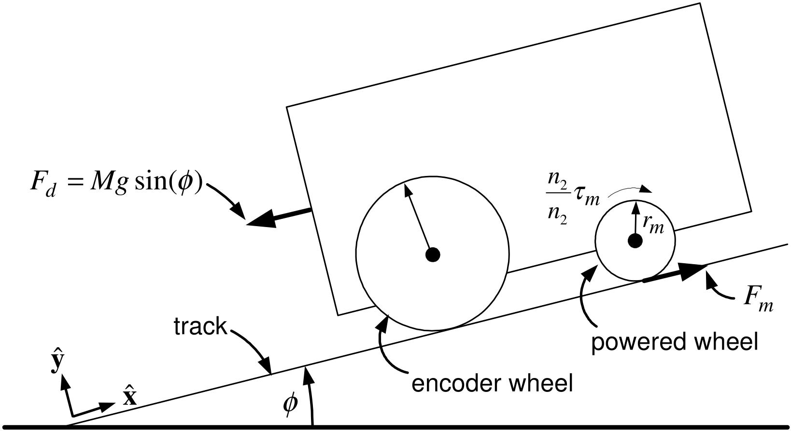
Motor Parameters
\(K_{T}=K_{b}\) the torque constant (back-emf constant).
\(R\) the armature resistance of the DC motor.
\(n_{2}/n_{1}\) is the gear ratio.
Etc.
Motor Variables
\(V(t)\) is the voltage applied to the DC motor of the cart’s powered wheel.
\(x\) is the cart position along the track.
\(v=dx/dt\) is the cart’s velocity.
\(F_{d}(t)=Mg\sin (\phi )\) is the force (disturbance) on the cart due to gravity.
Transfer Function Model
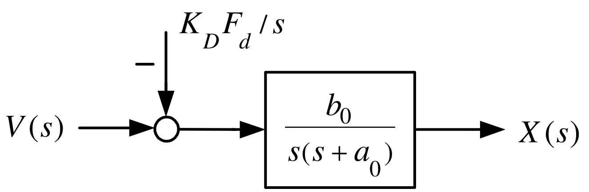
\[a_{0}\triangleq \frac{K_{b}K_{T}\left( \dfrac{n_{2}}{n_{1}}\dfrac{1}{r_{m}} \right) ^{2}}{RJ/r_{m}^{2}+RM},b_{0}\triangleq \frac{K_{T}\dfrac{ n_{2}}{n_{1}}\dfrac{1}{r_{m}}}{RJ/r_{m}^{2}+RM},K_{D}\triangleq \frac{R}{K_{T}\dfrac{n_{2}}{n_{1}}\dfrac{1}{r_{m}}},\text{}b_{0}K_{D}= \dfrac{1}{J/r_{m}^{2}+M}\]
\(K_{D}F_{d}=K_{D}Mg\sin (\phi )\) is an input voltage.
It produces the same effect on the cart’s position \(x(t)\) and speed \(v(t)\) as \(F_{d}.\)
\(b_{0}K_{D}F_{d}=\dfrac{Mg\sin (\phi )}{J/r_{m}^{2}+M}\) is the acceleration of the cart due to gravity.

Statespace Model \[\begin{aligned} \frac{dx}{dt} &=v \\ \frac{dv}{dt} &=-a_{0}v+b_{0}V(t)-\underset{d}{\underbrace{b_{0}K_{D}F_{d}}} . \end{aligned}\] where \[d\triangleq b_{0}K_{D}F_{d}=\frac{Mg\sin (\phi )}{J/r_{m}^{2}+M}.\]
With \(u\triangleq V(t)\) and \(F_{d}=0\) this becomes \[\begin{aligned} \frac{dx}{dt} &=v \\ \frac{dv}{dt} &=-a_{0}v+b_{0}u. \end{aligned}\]
Objective: Have the cart follow (track) a specified trajectory \((x_{ref}(t),v_{ref}(t))\).
Trajectory Specifications: \[\begin{array}{lcl} v_{ref}(0)\;=0 & & \dot{v}_{ref}(0)\;=0 \\ v_{ref}(t_{1})=v_{\max } & & \dot{v}_{ref}(t_{1})=0 \\ v_{ref}(t)\;\,=v_{\max } & & t_{1}\leq t\leq t_{2} \\ v_{ref}(t_{2})=v_{\max } & & \dot{v}_{ref}(t_{2})=0 \\ v_{ref}(t_{3})=0 & & \dot{v}_{ref}(t_{3})=0. \end{array}\] and \[\begin{aligned} v_{ref}(t) &=v_{ref}(t_{3}-t)\text{for}t_{2}\leq t\leq t_{3} \\ \int_{0}^{t_{3}}v_{ref}(\tau )d\tau &=x_{f}. \end{aligned}\]
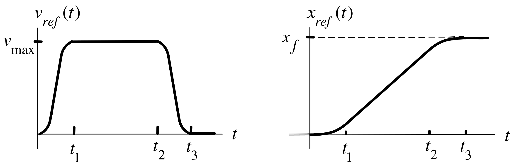
Try \[\begin{aligned} v_{ref}(t) &=c_{1}t^{2}+c_{2}t^{3}\text{for}0\leq t\leq t_{1} \\ v_{ref}(0) &=0 \\ \dot{v}_{ref}(0) &=0. \end{aligned}\] At \(t_{1}\) \[\begin{aligned} v_{ref}(t_{1}) &=c_{1}t_{1}^{2}+c_{2}t_{1}^{3}=v_{\max } \\ \dot{v}_{ref}(t_{1}) &=2c_{1}t_{1}+3c_{2}t_{1}^{2}=0\text{} \end{aligned}\] or \[\left[ \begin{array}{cc} t_{1}^{2} & t_{1}^{3} \\ 2t_{1} & 3t_{1}^{2} \end{array} \right] \left[ \begin{array}{c} c_{1} \\ c_{2} \end{array} \right] =\left[ \begin{array}{c} v_{\max } \\ 0 \end{array} \right] .\]

From previous slide: \[\left[ \begin{array}{cc} t_{1}^{2} & t_{1}^{3} \\ 2t_{1} & 3t_{1}^{2} \end{array} \right] \left[ \begin{array}{c} c_{1} \\ c_{2} \end{array} \right] =\left[ \begin{array}{c} v_{\max } \\ 0 \end{array} \right] .\] \(\Longrightarrow\) \[\left[ \begin{array}{c} c_{1} \\ c_{2} \end{array} \right] =\frac{1}{t_{1}^{4}}\left[ \begin{array}{rr} 3t_{1}^{2} & -t_{1}^{3} \\ -2t_{1} & t_{1}^{2} \end{array} \right] \left[ \begin{array}{c} v_{\max } \\ 0 \end{array} \right] =\left[ \begin{array}{c} +3v_{\max }/t_{1}^{2} \\ -2v_{\max }/t_{1}^{3} \end{array} \right] .\] \(v_{ref}(t):\) \[v_{ref}(t)=\left\{ \begin{array}{lcl} c_{1}t^{2}+c_{2}t^{3}\text{,} & & 0\leq t\leq t_{1} \\ v_{\text{max}}, & & t_{1}\leq t\leq t_{2} \\ c_{1}(t_{3}-t)^{2}+c_{2}(t_{3}-t)^{3}, & & t_{2}\leq t\leq t_{3} \end{array} \right.\]

At time \(t_{1}\): \[x_{ref}(t_{1})=\int_{0}^{t_{1}}v_{ref}(\tau )d\tau =c_{1}\frac{t_{1}^{3}}{3} +c_{2}\frac{t_{1}^{4}}{4}=\frac{3v_{\max }}{t_{1}^{2}}\frac{t_{1}^{3}}{3}- \frac{2v_{\max }}{t_{1}^{3}}\frac{t_{1}^{4}}{4}=\frac{v_{\max }t_{1}}{2}.\] Total distance traveled: \[x_{f}=\int_{0}^{t_{3}}v_{ref}(\tau )d\tau =2x_{ref}(t_{1})+v_{\max }(t_{2}-t_{1})=2\frac{v_{\max }t_{1}}{2}+v_{\max }(t_{2}-t_{1})=v_{\max }t_{2}.\]
\(\mathbf{x}_{\mathbf{ref}}\mathbf{(t):}\) \[x_{ref}(t)=\left\{ \begin{array}{lcl} c_{1}t^{3}/3+c_{2}t^{4}/4, & & 0\leq t\leq t_{1} \\ v_{\text{max}}t_{1}/2+v_{\text{max}}(t-t_{1}), & & t_{1}\leq t\leq t_{2} \\ v_{\text{max}}t_{2}-c_{1}(t_{3}-t)^{3}/3-c_{2}(t_{3}-t)^{4}/4, & & t_{2}\leq t\leq t_{3}. \end{array} \right.\]
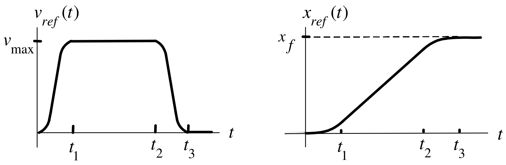
\[\alpha _{ref}(t)=\left\{ \begin{array}{lcl} 2c_{1}t+3c_{2}t^{2}, & & 0\leq t\leq t_{1} \\ 0, & & t_{1}\leq t\leq t_{2} \\ -2c_{1}(t_{3}-t)-3c_{2}(t_{3}-t)^{2}, & & t_{2}\leq t\leq t_{3}. \end{array} \right.\]
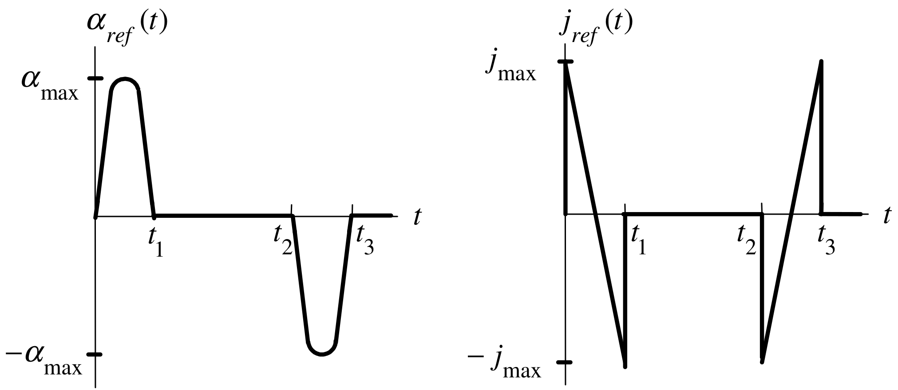
The equations for the cart are \[\begin{aligned} \frac{dx}{dt} &=v \\ \frac{dv}{dt} &=-a_{0}v+b_{0}u. \end{aligned}\] The trajectory \(x_{ref}(t),v_{ref}(t)\) along with the input reference \(u_{ref}(t)\) must satisfy \[\begin{aligned} \frac{dx_{ref}}{dt} &=v_{ref} \\ \underset{\alpha _{ref}}{\underbrace{\frac{dv_{ref}}{dt}}} &=-a_{0}v_{ref}+b_{0}u_{ref}. \end{aligned}\] Choose \(u_{ref}\) as \[u_{ref}(t)\triangleq \frac{\alpha _{ref}(t)+a_{0}v_{ref}(t)}{b_{0}}.\]
Cart Model: \(d\triangleq b_{0}K_{D}F_{d}=Mg\sin (\phi )/(J/r_{m}^{2}+M)\). \[\begin{aligned} dx/dt &=v \\ dv/dt &=-a_{0}v+b_{0}u(t)-d \end{aligned}\]
Reference trajectory and input: \[\begin{aligned} dx_{ref}/dt &=v_{ref} \\ dv_{ref}/dt &=-a_{0}v_{ref}+b_{0}u_{ref}(t) \end{aligned}\]
Error State Model: \[\begin{aligned} \epsilon _{1}(t) &\triangleq &x_{ref}(t)-x(t) \\ \epsilon _{2}(t) &\triangleq &v_{ref}(t)-v(t) \\ d\epsilon _{1}/dt &=\epsilon _{2} \\ d\epsilon _{2}/dt &=-a_{0}\epsilon _{2}+b_{0}w+d \end{aligned}\] where \[w(t)\triangleq u_{ref}(t)-u(t).\]
\[\begin{aligned} \epsilon _{1}(t) &\triangleq &x_{ref}(t)-x(t) \\ \epsilon _{2}(t) &\triangleq &v_{ref}(t)-v(t) \\ d\epsilon _{1}/dt &=\epsilon _{2} \\ d\epsilon _{2}/dt &=-a_{0}\epsilon _{2}+b_{0}w+d \end{aligned}\]
In matrix form: \[\frac{d}{dt}\left[ \begin{array}{c} \epsilon _{1} \\ \epsilon _{2} \end{array} \right] =\underset{A}{\underbrace{\left[ \begin{array}{cc} 0 & 1 \\ 0 & -a_{0} \end{array} \right] }}\left[ \begin{array}{c} \epsilon _{1} \\ \epsilon _{2} \end{array} \right] +\underset{b}{\underbrace{\left[ \begin{array}{c} 0 \\ b_{0} \end{array} \right] }}w+\left[ \begin{array}{c} 0 \\ 1 \end{array} \right] d.\]
With \(d=0\): \[\frac{d\epsilon }{dt}=A\epsilon +bw\]
Control Problem: With \[\frac{d\epsilon }{dt}=A\epsilon +bw\] find \(k\) such that \[w=-\left[ \begin{array}{cc} k_{1} & k_{2} \end{array} \right] \left[ \begin{array}{c} \epsilon _{1} \\ \epsilon _{2} \end{array} \right]\] results in \[\frac{d\epsilon }{dt}=(A-bk)\epsilon\] being stable, i.e., \[\epsilon (t)=e^{(A-bk)t}\left[ \begin{array}{c} \epsilon _{1}(0) \\ \epsilon _{2}(0) \end{array} \right] \rightarrow \left[ \begin{array}{c} 0 \\ 0 \end{array} \right] .\]
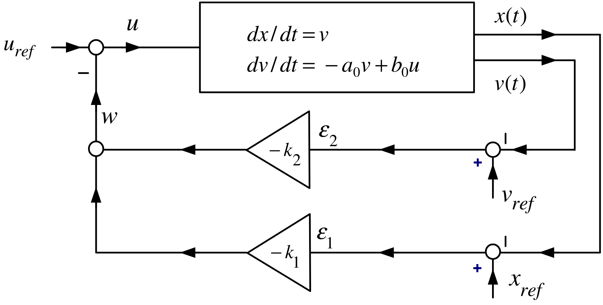
Choosing \(k\) \[\begin{aligned} e^{(A-bk)t} &=\mathcal{L}^{-1}\left\{ \left( sI- (A-bk)\right) ^{-1}\right\} \\ &=\mathcal{L}^{-1}\left\{ \left( s\left[ \begin{array}{cc} 1 & 0 \\ 0 & 1 \end{array} \right] -\left( \left[ \begin{array}{cc} 0 & 1 \\ 0 & -a_{0} \end{array} \right] -\left[ \begin{array}{c} 0 \\ b_{0} \end{array} \right] \left[ \begin{array}{cc} k_{1} & k_{2} \end{array} \right] \right) \right) ^{-1}\right\} \\ &=\mathcal{L}^{-1}\left\{ \left[ \begin{array}{cc} s & -1 \\ b_{0}k_{1} & s+a_{0}+b_{0}k_{2} \end{array} \right] ^{-1}\right\} \\ &=\mathcal{L}^{-1}\left\{ \frac{1}{\det \left( sI- (A-bk)\right) }\left[ \begin{array}{cc} s+a_{0}+b_{0}k_{2} & 1 \\ -b_{0}k_{1} & s \end{array} \right] \right\} . \end{aligned}\] Now \[\begin{aligned} \det \left( sI-(A-bk)\right) =\det \left[ \begin{array}{cc} s & -1 \\ b_{0}k_{1} & s+a_{0}+b_{0}k_{2} \end{array} \right] &=s(s+a_{0}+b_{0}k_{2})+b_{0}k_{1} \\ &=s^{2}+(a_{0}+b_{0}k_{2})s+b_{0}k_{1}. \end{aligned}\] With \(r_{1}>0,r_{2}>0\), choose \(k_{1},k_{2}\) so that \[s^{2}+(a_{0}+b_{0}k_{2})s+b_{0}k_{1}=(s+r_{1})(s+r_{2})=s^{2}+(r_{1}+r_{2})s+r_{1}r_{2}.\]
Choosing \(k\)
Then \[s^{2}+(a_{0}+b_{0}k_{2})s+b_{0}k_{1}=(s+r_{1})(s+r_{2})=s^{2}+(r_{1}+r_{2})s+r_{1}r_{2}.\]
requires \[k_{1}=\frac{r_{1}r_{2}}{b_{0}},k_{2}=\frac{r_{1}+r_{2}-a_{0}}{b_{0} }.\] We have \[\begin{aligned} \left. e^{(A-bk)t}\right\vert _{\substack{ k_{1}=r_{1}r_{2}/b_{0} \\ k_{2}=(r_{1}+r_{2}-a_{0})/b_{0} }} &=\mathcal{L}^{-1}\left\{ \frac{1}{ (s+r_{1})(s+r_{2})}\left[ \begin{array}{cc} s+a_{0}+b_{0}k_{2} & 1 \\ -b_{0}k_{1} & s \end{array} \right] \right\} \\ &=\mathcal{L}^{-1}\left\{ \left[ \begin{array}{cc} \dfrac{s+a_{0}+b_{0}k_{2}}{(s+r_{1})(s+r_{2})} & \dfrac{1}{(s+r_{1})(s+r_{2}) } \\ & \\ \dfrac{-b_{0}k_{1}}{(s+r_{1})(s+r_{2})} & \dfrac{s}{(s+r_{1})(s+r_{2})} \end{array} \right] \right\} \end{aligned}\] \(\Longrightarrow\) \[\begin{aligned} \left. e^{(A-bk)t}\right\vert _{\substack{ k_{1}=r_{1}r_{2}/b_{0} \\ k_{2}=(r_{1}+r_{2}-a_{0})/b_{0} }} &=\left[ \begin{array}{cc} A_{11}e^{-r_{1}t}+B_{11}e^{-r_{2}t} & A_{12}e^{-r_{1}t}+B_{12}e^{-r_{2}t} \\ A_{21}e^{-r_{1}t}+B_{21}e^{-r_{2}t} & A_{22}e^{-r_{1}t}+B_{22}e^{-r_{2}t} \end{array} \right] \\ &\rightarrow 0_{2\times 2}. \end{aligned}\]
Key observation
Chose \(k_{1}\) and \(k_{2}\) so that \[\left. \det \left( sI-(A-bk)\right) \right\vert _{\substack{ k_{1}=r_{1}r_{2}/b_{0} \\ k_{2}=(r_{1}+r_{2}-a_{0})/b_{0}}}=(s+r_{1})(s+r_{2}).\]
\(\Longrightarrow\) Every component of the \(2\times 2\) matrix \[\left( sI-(A-bk)\right) ^{-1}=\frac{1}{(s+r_{1})(s+r_{2})}\left[ \begin{array}{cc} s+a_{0}+b_{0}k_{2} & 1 \\ -b_{0}k_{1} & s \end{array} \right]\]
has its poles at \(-r_{1},-r_{2}\).
\(\Longrightarrow\) \[e^{(A-bk)t}=\mathcal{L}^{-1}\left\{ \frac{1}{(s+r_{1})(s+r_{2})}\left[ \begin{array}{cc} s+a_{0}+b_{0}k_{2} & 1 \\ -b_{0}k_{1} & s \end{array} \right] \right\} \rightarrow 0_{2\times 2}.\]
- The row vector \(k\) must be chosen so that the roots of \[\det \left( sI-(A-bk)\right) =0\] are in the open left half-plane resulting in \(A-bk\in \mathbb{R} ^{2\times 2}\) being a stable matrix.
Model \[\frac{dx}{dt}=Ax+bu,A\in \mathbb{R} ^{n\times n},b\in \mathbb{R} ^{n}.\]
Trajectory \(x_{d}\) and reference input \(u_{d}\) satisfy \[\frac{dx_{d}}{dt}=Ax_{d}+bu_{d}.\]
Error State \[\epsilon \triangleq x_{d}-x\]
Input Error \[w\triangleq u_{d}-u\]
Error Dynamics \[\frac{d}{dt}(x_{d}-x)=A(x_{d}-x)+b(u_{d}-u)\] or \[\frac{d}{dt}\epsilon =A\epsilon +bw.\]
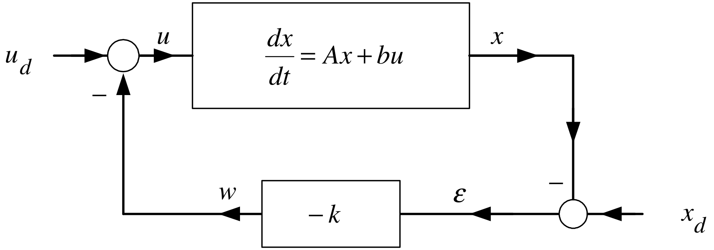
With \(\epsilon \triangleq x_{d}-x\) and \(w\triangleq u_{d}-u\) \[\frac{d}{dt}\epsilon =A\epsilon +bw.\]
Choose \(w=-k\epsilon\) to obtain \[\begin{aligned} \frac{d}{dt}\epsilon &=(A-bk)\epsilon \\ \Longrightarrow \left[ \begin{array}{c} \epsilon (t) \\ \end{array} \right] &=\left[ \begin{array}{ccc} & & \\ & e^{(A-bk)t} & \\ & & \end{array} \right] \left[ \begin{array}{c} \epsilon (0) \\ \end{array} \right] . \end{aligned}\]
Need to find \(k\) such that \[e^{(A-bk)t}\rightarrow 0_{n\times n}.\]
Recall that \[e^{(A-bk)t}\rightarrow 0_{n\times n}\]
if and only if the roots of \[\det (sI-(A-bk))=0\] are in the open left half-plane.
Equivalent Formulation With \[r(t)\triangleq u_{d}(t)+kx_{d}(t)\] the block diagram
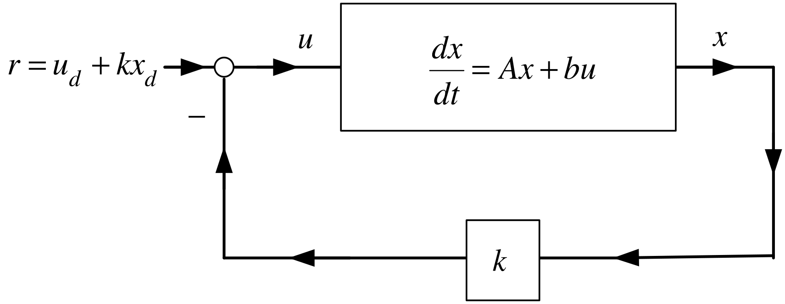
is equivalent to the block diagram on the previous slide.
Define \(A\in \mathbb{R} ^{3\times 3}\) \[A\triangleq \left[ \begin{array}{ccc} a_{11} & a_{12} & a_{13} \\ a_{21} & a_{22} & a_{23} \\ a_{31} & a_{32} & a_{33} \end{array} \right]\]
Define the sign matrix \(S\) as \[S\triangleq \left[ \begin{array}{rrr} 1 & -1 & 1 \\ -1 & 1 & -1 \\ 1 & -1 & 1 \end{array} \right] .\]
That is, the \((i,j)\) component \(s_{ij}\) of \(S\) is given by \(s_{ij}=(-1)^{i+j}\).
\[A\triangleq \left[ \begin{array}{ccc} a_{11} & a_{12} & a_{13} \\ a_{21} & a_{22} & a_{23} \\ a_{31} & a_{32} & a_{33} \end{array} \right] \text{define}cof(A)\triangleq \left[ \begin{array}{ccc} b_{11} & b_{12} & b_{13} \\ b_{21} & b_{22} & b_{23} \\ b_{31} & b_{32} & b_{33} \end{array} \right] \in \mathbb{R} ^{3\times 3}\] \[\begin{aligned} b_{11} &=\underset{s_{11}}{\underbrace{1}}\cdot \det \left[ \begin{array}{cc} a_{22} & a_{23} \\ a_{32} & a_{33} \end{array} \right] ,b_{12}=\underset{s_{12}}{\underbrace{-1}}\cdot \det \left[ \begin{array}{cc} a_{21} & a_{23} \\ a_{31} & a_{33} \end{array} \right] , \\ b_{13} &=\underset{s_{13}}{\underbrace{1}}\cdot \det \left[ \begin{array}{cc} a_{21} & a_{22} \\ a_{31} & a_{32} \end{array} \right] \\ b_{21} &=\underset{s_{21}}{\underbrace{-1}}\cdot \det \left[ \begin{array}{cc} a_{12} & a_{13} \\ a_{32} & a_{33} \end{array} \right] ,b_{22}=\underset{s_{22}}{\underbrace{1}}\cdot \det \left[ \begin{array}{cc} a_{11} & a_{13} \\ a_{31} & a_{33} \end{array} \right] , \\ b_{23} &=\underset{s_{23}}{\underbrace{-1}}\cdot \det \left[ \begin{array}{cc} a_{11} & a_{12} \\ a_{31} & a_{32} \end{array} \right] \\ b_{31} &=\underset{s31}{\underbrace{1}}\cdot \det \left[ \begin{array}{cc} a_{12} & a_{13} \\ a_{22} & a_{23} \end{array} \right] ,b_{32}=\underset{s_{32}}{\underbrace{-1}}\cdot \det \left[ \begin{array}{cc} a_{11} & a_{13} \\ a_{21} & a_{23} \end{array} \right] , \\ b_{33} &=\underset{s_{33}}{\underbrace{1}}\cdot \det \left[ \begin{array}{cc} a_{11} & a_{12} \\ a_{21} & a_{22} \end{array} \right] . \end{aligned}\]
\[adj(A)\triangleq cof^{T}(A)\in \mathbb{R} ^{3\times 3}\]
Inverse Matrix
\[A\triangleq \left[ \begin{array}{ccc} a_{11} & a_{12} & a_{13} \\ a_{21} & a_{22} & a_{23} \\ a_{31} & a_{32} & a_{33} \end{array} \right]\]
\[\det A=\underset{s_{11}}{\underbrace{1}}\cdot a_{11}\det \left[ \begin{array}{cc} a_{22} & a_{23} \\ a_{32} & a_{33} \end{array} \right] +\underset{s_{12}}{\underbrace{-1}}\cdot a_{12}\det \left[ \begin{array}{cc} a_{21} & a_{23} \\ a_{31} & a_{33} \end{array} \right] +\underset{s_{13}}{\underbrace{1}}\cdot a_{13}\det \left[ \begin{array}{cc} a_{21} & a_{22} \\ a_{31} & a_{32} \end{array} \right]\] \[\begin{aligned} A^{-1} &=\frac{1}{\det A}adj(A). \\ && \end{aligned}\]
We are assuming that \(\det (A)\neq 0\).
If \(\det (A)=0\) then \(A\) does not have an inverse.
This computation of \(A^{-1}\) not numerically efficient. It is for theoretical purposes.
Inverse of a Matrix
\[A=\left[ \begin{array}{ccc} 0 & 1 & 0 \\ 0 & 0 & 1 \\ -\alpha _{0} & -\alpha _{1} & -\alpha _{2} \end{array} \right] \qquad{}S\triangleq \left[ \begin{array}{rrr} 1 & -1 & 1 \\ -1 & 1 & -1 \\ 1 & -1 & 1 \end{array} \right]\]
Compute \((sI-A)^{-1}.\) \[sI-A=s\left[ \begin{array}{ccc} 1 & 0 & 0 \\ 0 & 1 & 0 \\ 0 & 0 & 1 \end{array} \right] -\left[ \begin{array}{ccc} 0 & 1 & 0 \\ 0 & 0 & 1 \\ -\alpha _{0} & -\alpha _{1} & -\alpha _{2} \end{array} \right] =\left[ \begin{array}{ccc} s & -1 & 0 \\ 0 & s & -1 \\ \alpha _{0} & \alpha _{1} & s+\alpha _{2} \end{array} \right] .\]
Evaluate \(\det (sI-A)\) via the \(1^{st}\) column: \[\begin{aligned} \det (sI-A) &=\underset{s_{11}}{\underbrace{(1)}}(s)\det \left[ \begin{array}{cc} s & -1 \\ \alpha _{1} & s+\alpha _{2} \end{array} \right] +\underset{s_{21}}{\underbrace{(-1)}}(0)\det \left[ \begin{array}{cc} -1 & 0 \\ \alpha _{1} & s+\alpha _{2} \end{array} \right] \\ &&+\underset{s_{31}}{\underbrace{(1)}}(\alpha _{0})\det \left[ \begin{array}{cc} -1 & 0 \\ s & -1 \end{array} \right] \\ &=s^{3}+\alpha _{2}s^{2}+\alpha _{1}s+\alpha _{0}. \end{aligned}\]
Inverse of a Matrix (continued)
Adjoint of \(sI-A=\left[ \begin{array}{ccc} s & -1 & 0 \\ 0 & s & -1 \\ \alpha _{0} & \alpha _{1} & s+\alpha _{2} \end{array} \right] .\qquad{}S\triangleq \left[ \begin{array}{rrr} 1 & -1 & 1 \\ -1 & 1 & -1 \\ 1 & -1 & 1 \end{array} \right] .\) \[\begin{aligned} &&b_{11}=1\cdot \det \left[ \begin{array}{cc} s & -1 \\ \alpha _{1} & s+\alpha _{2} \end{array} \right] ,\text{}b_{12}=-1\cdot \det \left[ \begin{array}{cc} 0 & -1 \\ \alpha _{0} & s+\alpha _{2} \end{array} \right] ,\text{}b_{13}=1\cdot \det \left[ \begin{array}{cc} 0 & s \\ \alpha _{0} & \alpha _{1} \end{array} \right] \\ &&b_{21}=-1\cdot \det \left[ \begin{array}{cc} -1 & 0 \\ \alpha _{1} & s+\alpha _{2} \end{array} \right] ,\text{}b_{22}=1\cdot \det \left[ \begin{array}{cc} s & 0 \\ \alpha _{0} & s+\alpha _{2} \end{array} \right] ,\text{}b_{23}=-1\cdot \det \left[ \begin{array}{cc} s & -1 \\ \alpha _{0} & \alpha _{1} \end{array} \right] \\ &&b_{31}=1\cdot \det \left[ \begin{array}{cc} -1 & 0 \\ s & -1 \end{array} \right] ,b_{32}=-1\cdot \det \left[ \begin{array}{cc} s & 0 \\ 0 & -1 \end{array} \right] ,b_{33}=1\cdot \det \left[ \begin{array}{cc} s & -1 \\ 0 & s \end{array} \right] . \end{aligned}\] \[\begin{aligned} \Longrightarrow cof(sI-A) &=\left[ \begin{array}{ccc} s^{2}+\alpha _{2}s+\alpha _{1} & -\alpha _{0} & -\alpha _{0}s \\ s+\alpha _{2} & s^{2}+\alpha _{2}s & -\alpha _{1}s-\alpha _{0} \\ 1 & s & s^{2} \end{array} \right] \\ \Longrightarrow adj(sI-A)=cof^{T}(sI-A) &=\left[ \begin{array}{ccc} s^{2}+\alpha _{2}s+\alpha _{1} & s+\alpha _{2} & 1 \\ -\alpha _{0} & s^{2}+\alpha _{2}s & s \\ -\alpha _{0}s & -\alpha _{1}s-\alpha _{0} & s^{2} \end{array} \right] . \end{aligned}\]
Inverse of a Matrix (continued)
\[\begin{aligned} (sI-A)^{-1} &=\frac{1}{\det (sI-A)}adj(sI-A) \\ &=\frac{1}{s^{3}+\alpha _{2}s^{2}+\alpha _{1}s+\alpha _{0}}\left[ \begin{array}{ccc} s^{2}+\alpha _{2}s+\alpha _{1} & s+\alpha _{2} & 1 \\ -\alpha _{0} & s^{2}+\alpha _{2}s & s \\ -\alpha _{0}s & -\alpha _{1}s-\alpha _{0} & s^{2} \end{array} \right] . \end{aligned}\]
Alternative Expression \[\begin{aligned} (sI-A)^{-1} &=\frac{1}{s^{3}+\alpha _{2}s^{2}+\alpha _{1}s+\alpha _{0}} \times \\ &&\left( \underset{N_{2}}{\underbrace{\left[ \begin{array}{ccc} 1 & 0 & 0 \\ 0 & 1 & 0 \\ 0 & 0 & 1 \end{array} \right] }}s^{2}+\underset{N_{1}}{\underbrace{\left[ \begin{array}{ccc} \alpha _{2} & 1 & 0 \\ 0 & \alpha _{2} & 1 \\ -\alpha _{0} & -\alpha _{1} & 0 \end{array} \right] }}s+\underset{N_{0}}{\underbrace{\left[ \begin{array}{ccc} \alpha _{1} & \alpha _{2} & 1 \\ -\alpha _{0} & 0 & 0 \\ 0 & -\alpha _{0} & 0 \end{array} \right] }}\right) \\ &=\frac{1}{\det (sI-A)}(N_{2}s^{2}+N_{1}s+N_{0}). \end{aligned}\]
(1) Let \(A\in \mathbb{R} ^{n\times n},B\in \mathbb{R} ^{n\times n}\) be two matrices. Then \[\det (AB)=\det (A)\det (B).\]
Proof omitted
(2) Let \(A\in \mathbb{R} ^{n\times n},B\in \mathbb{R} ^{n\times n}\) be invertible, that is, \(\det (A)\neq 0,\det (B)\neq 0\). Then \[(AB)^{-1}=B^{-1}A^{-1}.\]
This is because \[(AB)(B^{-1}A^{-1})=A(BB^{-1})A^{-1}=AIA^{-1}=AA^{-1}=I\]
(3) Let \(A\in \mathbb{R} ^{n\times n}\) with \(\det (A)\neq 0\). Then \[\det (A^{-1})=\frac{1}{\det A}.\]
As \(AA^{-1}=I\Longrightarrow (\det A)(\det A^{-1})=\det I=1\Longrightarrow \det (A^{-1})=1/\det A\)
Let \(A\in \mathbb{R} ^{3\times 3}\) with \[\det (sI-A)=s^{3}+\alpha _{2}s^{2}+\alpha _{1}s+\alpha _{0}\] write \[(sI-A)^{-1}=\frac{1}{\det (sI-A)}adj(sI-A)=\frac{1}{\det (sI-A)} (N_{2}s^{2}+N_{1}s+N_{0})\] or \[\det (sI-A)I=(sI-A)(N_{2}s^{2}+N_{1}s+N_{0})\] or \[\begin{aligned} (s^{3}+\alpha _{2}s^{2}+\alpha _{1}s+\alpha _{0})I &=(sI-A)(N_{2}s^{2}+N_{1}s+N_{0}) \\ &=s^{3}N_{2}+(N_{1}-AN_{2})s^{2}+(N_{0}-AN_{1})s-AN_{0}. \end{aligned}\]
From previous slide: \[(s^{3}+\alpha _{2}s^{2}+\alpha _{1}s+\alpha _{0})I=s^{3}N_{2}+(N_{1}-AN_{2})s^{2}+(N_{0}-AN_{1})s-AN_{0}.\]
Equate powers of \(s\) \[\begin{aligned} I &\mathbf{=}&N_{2} \\ \alpha _{2}I &\mathbf{=}&N_{1}-AN_{2} \\ \alpha _{1}I &\mathbf{=}&N_{0}-AN_{1} \\ \alpha _{0}I &=-AN_{0}. \end{aligned}\] Then \[\begin{aligned} \alpha _{0}I=-AN_{0}=-A\left( \alpha _{1}I\mathbf{+}AN_{1}\right) =-\alpha _{1}A\mathbf{-}A^{2}N_{1} &=-\alpha _{1}A-A^{2}\left( \alpha _{2}I\mathbf{+} AN_{2}\right) \\ &=-\alpha _{1}A-\alpha _{2}A^{2}-A^{3} \end{aligned}\] or \[A^{3}+\alpha _{2}A^{2}+\alpha _{1}A+\alpha _{0}I=0_{3\times 3}.\]
- This is the Cayley-Hamilton Theorem.
Cayley-Hamilton Theorem
\[A=\left[ \begin{array}{ccc} 0 & 1 & 0 \\ 0 & 0 & 1 \\ -\alpha _{0} & -\alpha _{1} & -\alpha _{2} \end{array} \right].\]
\[\det(sI-A)=s^{3}+\alpha _{2}s^{2}+\alpha _{1}s+\alpha _{0}.\]
\[\begin{aligned} p(A)&=A^{3}+\alpha _{2}A^{2}+\alpha _{1}A+\alpha _{0}I \\ &=\left[ \begin{array}{ccc} -\alpha _{0} & -\alpha _{1} & -\alpha _{2} \\ \alpha _{0}\alpha _{2} & \alpha _{1}\alpha _{2}-\alpha _{0} & \alpha _{2}^{2}-\alpha _{1} \\ \alpha _{0}\alpha _{1}-\alpha _{0}\alpha _{2}^{2} & \alpha _{1}^{2}-\alpha _{1}\alpha _{2}^{2}+\alpha _{0}\alpha _{2} & -\alpha _{2}^{3}+2\alpha _{1}\alpha _{2}-\alpha _{0} \end{array} \right] \\ &\quad+\alpha _{2}\left[ \begin{array}{ccc} 0 & 0 & 1 \\ -\alpha _{0} & -\alpha _{1} & -\alpha _{2} \\ \alpha _{0}\alpha _{2} & \alpha _{1}\alpha _{2}-\alpha _{0} & \alpha _{2}^{2}-\alpha _{1} \end{array} \right] +\alpha _{1}\left[ \begin{array}{ccc} 0 & 1 & 0 \\ 0 & 0 & 1 \\ -\alpha _{0} & -\alpha _{1} & -\alpha _{2} \end{array} \right] +\alpha _{0}\left[ \begin{array}{ccc} 1 & 0 & 0 \\ 0 & 1 & 0 \\ 0 & 0 & 1 \end{array} \right] \\ &=\left[ \begin{array}{ccc} 0 & 0 & 0 \\ 0 & 0 & 0 \\ 0 & 0 & 0 \end{array} \right] . \end{aligned}\]
Let \(A\in \mathbb{R}^{n\times n}\).
Definition Characteristic Polynomial
The polynomial \[p_A(s)=\det(sI-A)\] is the characteristic polynomial of \(A\).
Definition Eigenvalues
The roots of \[p_A(s)=0\] are the characteristic values, or eigenvalues, of \(A\).
Remark The word “eigen” is German for “characteristic”.
Definition Stable Matrix
If every eigenvalue of \(A\) lies in the open left half-plane, then \(A\) is a stable matrix.
\[\frac{d}{dt}\left[ \begin{array}{c} x_{1} \\ x_{2} \\ x_{3} \end{array} \right] =\underset{A}{\underbrace{\left[ \begin{array}{ccc} a_{11} & a_{12} & a_{13} \\ a_{21} & a_{22} & a_{23} \\ a_{31} & a_{32} & a_{33} \end{array} \right] }}\left[ \begin{array}{c} x_{1} \\ x_{2} \\ x_{3} \end{array} \right] +\underset{b}{\underbrace{\left[ \begin{array}{c} b_{1} \\ b_{2} \\ b_{3} \end{array} \right] }}u\]
Let \[u=-\underset{k}{\underbrace{\left[ \begin{array}{ccc} k_{1} & k_{2} & k_{3} \end{array} \right] }}\left[ \begin{array}{c} x_{1} \\ x_{2} \\ x_{3} \end{array} \right] .\]
Then \[\frac{dx}{dt}=(A-bk)x\Longrightarrow x(t)=e^{(A-bk)t}x(0).\]
Note that \[\begin{aligned} \left( sI-(A-bk)\right) ^{-1} &=\frac{1}{\det \left( sI- (A-bk)\right) }adj\left( sI-(A-bk)\right) \in \mathbb{R} ^{3\times 3} \\ e^{(A-bk)t} &=\mathcal{L}^{-1}\left\{ \frac{1}{\det \left( sI-\frac{{}}{ {}}(A-bk)\right) }adj\left( sI-(A-bk)\right) \right\} . \end{aligned}\]
\[e^{(A-bk)t}=\mathcal{L}^{-1}\left\{ \frac{1}{\det \left( sI- (A-bk)\right) }adj\left( sI-(A-bk)\right) \right\} .\] Then \[e^{(A-bk)t}\rightarrow \left[ \begin{array}{ccc} 0 & 0 & 0 \\ 0 & 0 & 0 \\ 0 & 0 & 0 \end{array} \right]\]
if and only if the roots of \[\det \left( sI-(A-bk)\right) =0\]
are in the open left-half plane, i.e., \(A-bk\) is a stable matrix.
Control Canonical Form
\[\frac{d}{dt}\left[ \begin{array}{c} x_{1} \\ x_{2} \\ x_{3} \end{array} \right] =\underset{A}{\underbrace{\left[ \begin{array}{ccc} 0 & 1 & 0 \\ 0 & 0 & 1 \\ -\alpha _{0} & -\alpha _{1} & -\alpha _{2} \end{array} \right] }}\left[ \begin{array}{c} x_{1} \\ x_{2} \\ x_{3} \end{array} \right] +\underset{b}{\underbrace{\left[ \begin{array}{c} 0 \\ 0 \\ 1 \end{array} \right] }}u\]
Recall that \[\det (sI-A)=s^{3}+\alpha _{2}s^{2}+\alpha _{1}s+\alpha _{0}.\] Let \[u=-kx=-\left[ \begin{array}{ccc} k_{1} & k_{2} & k_{3} \end{array} \right] \left[ \begin{array}{c} x_{1} \\ x_{2} \\ x_{3} \end{array} \right] .\]
Then \[\frac{dx}{dt}=(A-bk)x\Longrightarrow x(t)=e^{(A-bk)t}x(0).\]
Choose \(k\) so that eigenvalues of \(A-bk\) are in the open left-half plane.
Then \[e^{(A-bk)t}\rightarrow 0_{3\times 3}.\]
Control Canonical Form (continued)
- Choose \(k\) so that eigenvalues of \(A-bk\) are in the open left-half plane.
\[\begin{aligned} sI-(A-bk) &=s\left[ \begin{array}{ccc} 1 & 0 & 0 \\ 0 & 1 & 0 \\ 0 & 0 & 1 \end{array} \right] -\left( \left[ \begin{array}{ccc} 0 & 1 & 0 \\ 0 & 0 & 1 \\ -\alpha _{0} & -\alpha _{1} & -\alpha _{2} \end{array} \right] -\left[ \begin{array}{c} 0 \\ 0 \\ 1 \end{array} \right] \left[ \begin{array}{ccc} k_{1} & k_{2} & k_{3} \end{array} \right] \right) \\ &=s\left[ \begin{array}{ccc} 1 & 0 & 0 \\ 0 & 1 & 0 \\ 0 & 0 & 1 \end{array} \right] +\left[ \begin{array}{ccc} 0 & -1 & 0 \\ 0 & 0 & -1 \\ \alpha _{0} & \alpha _{1} & \alpha _{2} \end{array} \right] +\left[ \begin{array}{ccc} 0 & 0 & 0 \\ 0 & 0 & 0 \\ k_{1} & k_{2} & k_{3} \end{array} \right] \\ &=s\left[ \begin{array}{ccc} 1 & 0 & 0 \\ 0 & 1 & 0 \\ 0 & 0 & 1 \end{array} \right] +\left[ \begin{array}{ccc} 0 & -1 & 0 \\ 0 & 0 & -1 \\ k_{1}+\alpha _{0} & k_{2}+\alpha _{1} & k_{3}+\alpha _{2} \end{array} \right] \\ &=\left[ \begin{array}{ccc} s & -1 & 0 \\ 0 & s & -1 \\ k_{1}+\alpha _{0} & k_{2}+\alpha _{1} & s+k_{3}+\alpha _{2} \end{array} \right] . \end{aligned}\]
Control Canonical Form (continued)
\[\begin{aligned} \det \left( sI-(A-bk)\right) &=\det \left[ \begin{array}{ccc} s & -1 & 0 \\ 0 & s & -1 \\ k_{1}+\alpha _{0} & k_{2}+\alpha _{1} & s+k_{3}+\alpha _{2} \end{array} \right] \\ &=s\det \left[ \begin{array}{cc} s & -1 \\ k_{2}+\alpha _{1} & s+k_{3}+\alpha _{2} \end{array} \right] -(-1)\det \left[ \begin{array}{cc} 0 & -1 \\ k_{1}+\alpha _{0} & s+k_{3}+\alpha _{2} \end{array} \right] \\ &=s\left( s(s+k_{3}+\alpha _{2})+k_{2}+\alpha _{1}\right) +k_{1}+\alpha _{0} \\ &=s^{3}+(k_{3}+\alpha _{2})s^{2}+(k_{2}+\alpha _{1})s+k_{1}+\alpha _{0}. \end{aligned}\]
With \(r_{1}>0,r_{2}>0,r_{3}>0\) choose \(k\) so that \[\begin{aligned} \det \left( sI-(A-bk)\right) &=(s+r_{1})(s+r_{2})(s+r_{3}) \\ &=s^{3}+(r_{1}+r_{2}+r_{3})s^{2}+(r_{1}r_{2}+r_{1}r_{3}+r_{2}r_{3})s+r_{1}r_{2}r_{3}. \end{aligned}\]
Control Canonical Form (continued)
\[\begin{aligned} \det \left( sI-(A-bk)\right) &=s^{3}+(k_{3}+\alpha _{2})s^{2}+(k_{2}+\alpha _{1})s+k_{1}+\alpha _{0} \\ &=s^{3}+(r_{1}+r_{2}+r_{3})s^{2}+(r_{1}r_{2}+r_{1}r_{3}+r_{2}r_{3})s+r_{1}r_{2}r_{3} \end{aligned}\]
Set \[\begin{aligned} k_{3}+\alpha _{2} &=r_{1}+r_{2}+r_{3} \\ k_{2}+\alpha _{1} &=r_{1}r_{2}+r_{1}r_{3}+r_{2}r_{3} \\ k_{1}+\alpha _{0} &=r_{1}r_{2}r_{3} \end{aligned}\] or \[\begin{aligned} k_{3} &=r_{1}+r_{2}+r_{3}-\alpha _{2} \\ k_{2} &=r_{1}r_{2}+r_{1}r_{3}+r_{2}r_{3}-\alpha _{1} \\ k_{1} &=r_{1}r_{2}r_{3}-\alpha _{0}. \end{aligned}\]
Control Canonical Form (continued)
Tedious calculations give
\(\left( sI-(A-bk)\right) ^{-1}\) \[\begin{aligned} &=\frac{1}{\det (sI-(A-bk))}\left[ \begin{array}{ccc} s^{2}+s(\alpha _{2}+k_{3})+\alpha _{1}+k_{2} & s+\alpha _{2}+k_{3} & 1 \\ -\alpha _{0}-k_{1} & s^{2}+s(\alpha _{2}+k_{3}) & s \\ -s\alpha _{0}-sk_{1} & -s(\alpha _{1}+k_{2})-\alpha _{0}-k_{1} & s^{2} \end{array} \right] \\ &=\frac{1}{(s+r_{1})(s+r_{2})(s+r_{3})}\left[ \begin{array}{ccc} s^{2}+s(\alpha _{2}+k_{3})+\alpha _{1}+k_{2} & s+\alpha _{2}+k_{3} & 1 \\ -\alpha _{0}-k_{1} & s^{2}+s(\alpha _{2}+k_{3}) & s \\ -s\alpha _{0}-sk_{1} & -s(\alpha _{1}+k_{2})-\alpha _{0}-k_{1} & s^{2} \end{array} \right] . \end{aligned}\]
Each component of \(\mathcal{L} ^{-1}\{\left( sI- (A-bk)\right) ^{-1}\}\) will be of the form \[Ae^{-r_{1}t}+Be^{-r_{2}t}+Ce^{-r_{3}t}.\]
Therefore \[e^{(A-bk)t}=\mathcal{L}^{-1}\left\{ \left( sI-(A-bk)\right) ^{-1}\right\} \rightarrow 0_{3\times 3}\]
Magnetic Levitation
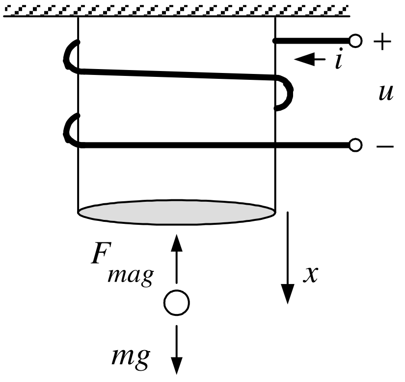
Linear statespace model \[\frac{d}{dt}\left[ \begin{array}{c} i-i_{eq} \\ x-x_{eq} \\ v-v_{eq} \end{array} \right] =\underset{A}{\underbrace{\left[ \begin{array}{ccc} -\dfrac{R}{L_{0}} & 0 & \dfrac{rL_{1}}{L_{0}}\dfrac{i_{eq}}{x_{eq}^{2}} \\ 0 & 0 & 1 \\ -\dfrac{2g}{i_{eq}} & \dfrac{2g}{x_{eq}} & 0 \end{array} \right] }}\left[ \begin{array}{c} i-i_{eq} \\ x-x_{eq} \\ v-v_{eq} \end{array} \right] +\underset{b}{\underbrace{\left[ \begin{array}{c} \dfrac{1}{L_{0}} \\ 0 \\ 0 \end{array} \right] }}(u-u_{eq})\]
Set \[\left[ \begin{array}{c} z_{1} \\ z_{2} \\ z_{3} \end{array} \right] \triangleq \left[ \begin{array}{c} i-i_{eq} \\ x-x_{eq} \\ v-v_{eq} \end{array} \right] ,w=u-u_{eq}\text{and}A=\left[ \begin{array}{ccc} a_{11} & 0 & a_{13} \\ 0 & 0 & 1 \\ a_{31} & a_{32} & 0 \end{array} \right] ,b=\left[ \begin{array}{c} b_{1} \\ 0 \\ 0 \end{array} \right]\]
Magnetic Levitation (continued)

\[\frac{d}{dt}\left[ \begin{array}{c} z_{1} \\ z_{2} \\ z_{3} \end{array} \right] =\left[ \begin{array}{ccc} a_{11} & 0 & a_{13} \\ 0 & 0 & 1 \\ a_{31} & a_{32} & 0 \end{array} \right] \left[ \begin{array}{c} z_{1} \\ z_{2} \\ z_{3} \end{array} \right] +\left[ \begin{array}{c} b_{1} \\ 0 \\ 0 \end{array} \right] w\]
With \[w=-\left[ \begin{array}{ccc} k_{1} & k_{2} & k_{3} \end{array} \right] \left[ \begin{array}{c} z_{1} \\ z_{2} \\ z_{3} \end{array} \right]\] the closed-loop system is \[\frac{dz}{dt}=(A-bk)z\Longrightarrow z(t)=e^{(A-bk)t}z(0).\]
Magnetic Levitation (continued)
\[A-bk=\left[ \begin{array}{ccc} a_{11} & 0 & a_{13} \\ 0 & 0 & 1 \\ a_{31} & a_{32} & 0 \end{array} \right] -\left[ \begin{array}{c} b_{1} \\ 0 \\ 0 \end{array} \right] \left[ \begin{array}{ccc} k_{1} & k_{2} & k_{3} \end{array} \right] =\left[ \begin{array}{ccc} a_{11}-b_{1}k_{1} & -b_{1}k_{2} & a_{13}-b_{1}k_{3} \\ 0 & 0 & 1 \\ a_{31} & a_{32} & 0 \end{array} \right]\] \[sI-(A-bk)=\left[ \begin{array}{ccc} s-(a_{11}-b_{1}k_{1}) & b_{1}k_{2} & -(a_{13}-b_{1}k_{3}) \\ 0 & s & -1 \\ -a_{31} & -a_{32} & s \end{array} \right]\] Find \(k\) so that \[z(t)=\left[ \begin{array}{c} z_{1}(t) \\ z_{2}(t) \\ z_{3}(t) \end{array} \right] \triangleq \left[ \begin{array}{c} i(t)-i_{eq} \\ x(t)-x_{eq} \\ v(t)-v_{eq} \end{array} \right] \rightarrow \left[ \begin{array}{c} 0 \\ 0 \\ 0 \end{array} \right]\]
Magnetic Levitation (continued)
\[\begin{aligned} \det \left( sI-(A-bk)\right) &=\det \left[ \begin{array}{ccc} s+b_{1}k_{1}-a_{11} & b_{1}k_{2} & b_{1}k_{3}-a_{13} \\ 0 & s & -1 \\ -a_{31} & -a_{32} & s \end{array} \right] \\ &=(s+b_{1}k_{1}-a_{11})\det \left[ \begin{array}{cc} s & -1 \\ -a_{32} & s \end{array} \right] +(-a_{31})\det \left[ \begin{array}{cc} b_{1}k_{2} & b_{1}k_{3}-a_{13} \\ s & -1 \end{array} \right] \\ &=(s+b_{1}k_{1}-a_{11})(s^{2}-a_{32})-a_{31}\left( -b_{1}k_{2}-s(b_{1}k_{3}-a_{13})\right) \\ &= s^{3}+(b_{1}k_{1}-a_{11})s^{2}+(b_{1}k_{3}a_{31}-a_{13}a_{31}-a_{32})s+ \\ &&a_{11}a_{32}-b_{1}k_{1}a_{32}+b_{1}k_{2}a_{31}. \end{aligned}\]
Magnetic Levitation (continued)
\[\begin{aligned} \det \left( sI-(A-bk)\right) &=s^{3}+(b_{1}k_{1}-a_{11})s^{2}+(b_{1}k_{3}a_{31}-a_{13}a_{31}-a_{32})s+ \\ &&\left( a_{11}a_{32}-b_{1}k_{1}a_{32}+b_{1}k_{2}a_{31}\right) . \end{aligned}\]
Choose \(k\) so that \[\begin{aligned} \det (sI-(A-bk)) &=(s+r_{1})(s+r_{2})(s+r_{3}) \\ &=s^{3}+(r_{1}+r_{2}+r_{3})s^{2}+(r_{1}r_{2}+r_{1}r_{3}+r_{2}r_{3})s+r_{1}r_{2}r_{3}. \end{aligned}\] That is, \[\begin{aligned} b_{1}k_{1}-a_{11} &=r_{1}+r_{2}+r_{3} \\ b_{1}k_{3}a_{31}-a_{13}a_{31}-a_{32} &=r_{1}r_{2}+r_{1}r_{3}+r_{2}r_{3} \\ a_{11}a_{32}-b_{1}k_{1}a_{32}+b_{1}k_{2}a_{31} &=r_{1}r_{2}r_{3} \end{aligned}\] or \[\begin{aligned} k_{1} &=\frac{r_{1}+r_{2}+r_{3}+a_{11}}{b_{1}} \\ k_{3} &=\frac{r_{1}r_{2}+r_{1}r_{3}+r_{2}r_{3}+a_{13}a_{31}+a_{32}}{ b_{1}a_{31}} \\ k_{2} &=\frac{r_{1}r_{2}r_{3}-a_{11}a_{32}+b_{1}k_{1}a_{32}}{b_{1}a_{31}}= \frac{r_{1}r_{2}r_{3}-a_{11}a_{32}+(r_{1}+r_{2}+r_{3}+a_{11})a_{32}}{ b_{1}a_{31}}. \end{aligned}\]
Magnetic Levitation (continued)
With these values of the gains \(k_{i}\) we have \[\begin{aligned} e^{(A-bk)t} &=\mathcal{L}^{-1}\left\{ \left( sI- (A-bk)\right) ^{-1}\right\} \\ &=\mathcal{L}^{-1}\left\{ \frac{1}{(s+r_{1})(s+r_{2})(s+r_{3})} adj\left( sI-(A-bk)\right) \right\} \\ &\rightarrow &0_{3\times 3}. \end{aligned}\] I.e., \[z(t)=\left[ \begin{array}{c} i(t)-i_{eq} \\ x(t)-x_{eq} \\ v(t)-v_{eq} \end{array} \right] =e^{(A-bk)t}\left[ \begin{array}{c} i(0)-i_{eq} \\ x(0)-x_{eq} \\ v(0)-v_{eq} \end{array} \right] \rightarrow \left[ \begin{array}{c} 0 \\ 0 \\ 0 \end{array} \right] .\] As \[w=u-u_{eq}=-kz\]
the actual voltage applied to the coil is \[u(t)=-kz(t)+u_{eq}.\]
Cart on track system $ $ \[\begin{aligned} dx/dt &=v \\ dv/dt &=-a_{0}v+b_{0}u(t)-\underset{d}{\underbrace{b_{0}K_{D}F_{d}}} \end{aligned}\]
where \(d=b_{0}K_{D}F_{d}=Mg\sin (\phi )/(J/r_{m}^{2}+M).\)
Reference Trajectory \(x_{ref}(t),v_{ref}(t),u_{ref}(t)\) \[\begin{aligned} dx_{ref}/dt &=v_{ref} \\ dv_{ref}/dt &=-a_{0}v_{ref}+b_{0}u_{ref}. \end{aligned}\]
Error state variables \[\begin{aligned} \epsilon _{1}(t) &=x_{ref}(t)-x(t) \\ \epsilon _{2}(t) &=v_{ref}(t)-v(t) \end{aligned}\]
Error state model \[\begin{aligned} d\epsilon _{1}/dt &=\epsilon _{2} \\ d\epsilon _{2}/dt &=-a_{0}\epsilon _{2}+b_{0}w+d \end{aligned}\] where \(w(t)\triangleq u_{ref}(t)-u(t).\)
Matrix form \[\frac{d}{dt}\left[ \begin{array}{c} \epsilon _{1} \\ \epsilon _{2} \end{array} \right] =\underset{A}{\underbrace{\left[ \begin{array}{cc} 0 & 1 \\ 0 & -a_{0} \end{array} \right] }}\underset{\epsilon }{\underbrace{\left[ \begin{array}{c} \epsilon _{1} \\ \epsilon _{2} \end{array} \right] }}+\underset{b}{\underbrace{\left[ \begin{array}{c} 0 \\ b_{0} \end{array} \right] }}w+\underset{p}{\underbrace{\left[ \begin{array}{c} 0 \\ 1 \end{array} \right] }}d.\]
Define \[\epsilon _{0}(t)\triangleq \int_{0}^{t}\epsilon _{1}(\tau )d\tau .\]
to obtain \[\frac{d}{dt}\left[ \begin{array}{c} \epsilon _{0} \\ \epsilon _{1} \\ \epsilon _{2} \end{array} \right] =\underset{A_{a}}{\underbrace{\left[ \begin{array}{ccc} 0 & 1 & 0 \\ 0 & 0 & 1 \\ 0 & 0 & -a_{0} \end{array} \right] }}\underset{\epsilon _{a}}{\underbrace{\left[ \begin{array}{c} \epsilon _{0} \\ \epsilon _{1} \\ \epsilon _{2} \end{array} \right] }}+\underset{b_{a}}{\underbrace{\left[ \begin{array}{c} 0 \\ 0 \\ b_{0} \end{array} \right] }}w+\underset{p_{a}}{\underbrace{\left[ \begin{array}{c} 0 \\ 0 \\ 1 \end{array} \right] }}d.\] \[\text{Set}w(t)=-\left( k_{0}\int_{0}^{t}\epsilon _{1}(\tau )d\tau +k_{1}\epsilon _{1}(t)+k_{2}\epsilon _{2}(t)\right) =-\underset{k_{a}}{ \underbrace{\left[ \begin{array}{ccc} k_{0} & k_{1} & k_{2} \end{array} \right] }}\underset{\epsilon _{a}}{\underbrace{\left[ \begin{array}{c} \epsilon _{0} \\ \epsilon _{1} \\ \epsilon _{2} \end{array} \right] }}.\] Closed-Loop System \[\frac{d\epsilon _{a}}{dt}=A_{a}\epsilon _{a}-b_{a}k_{a}\epsilon _{a}+p_{a}d=(A_{a}-b_{a}k_{a})\epsilon _{a}+p_{a}d.\]
Closed-Loop System \[\frac{d\epsilon _{a}}{dt}=A_{a}\epsilon _{a}-b_{a}k_{a}\epsilon _{a}+p_{a}d=(A_{a}-b_{a}k_{a})\epsilon _{a}+p_{a}d.\] With \[E(s)=\left[ \begin{array}{c} E_{0}(s) \\ E_{1}(s) \\ E_{2}(s) \end{array} \right] \triangleq \left[ \begin{array}{c} \mathcal{L}\{\epsilon _{0}(t)\} \\ \mathcal{L}\{\epsilon _{1}(t)\} \\ \mathcal{L}\{\epsilon _{2}(t)\} \end{array} \right] =\mathcal{L}\{\epsilon _{a}(t)\}\] we have \[E(s)=\left( sI-(A_{a}-b_{a}k_{a})\right) ^{-1}\epsilon _{a}(0)+\left( sI-(A_{a}-b_{a}k_{a})\right) ^{-1}p_{a}\frac{ d}{s}.\] Find \(k_{a}\) such that \[\det \left( sI-(A_{a}-b_{a}k_{a})\right) =(s+r_{1})(s+r_{2})(s+r_{3})\text{with}r_{1}>0,r_{2}>0,r_{3}>0.\] Then \[\begin{aligned} sE(s) &=s\left( sI-(A_{a}-b_{a}k_{a})\right) ^{-1}\epsilon _{a}(0)+s\left( sI-(A_{a}-b_{a}k_{a}) \right) ^{-1}p_{a}\frac{d}{s} \\ &=s\left( sI-(A_{a}-b_{a}k_{a})\right) ^{-1}\epsilon _{a}(0)+\left( sI-(A_{a}-b_{a}k_{a})\right) ^{-1}p_{a}d \end{aligned}\] is stable.
\[\begin{aligned} \epsilon _{a}(\infty )=\lim_{s\rightarrow 0}sE(s) &=\lim_{s\rightarrow 0}s\left( sI-(A_{a}-b_{a}k_{a})\right) ^{-1}\epsilon _{a}(0)+\left( sI- (A_{a}-b_{a}k_{a})\right) ^{-1}p_{a}d \\ &=-\left( A_{a}-b_{a}k_{a}\right) ^{-1}p_{a}d. \end{aligned}\]
It is shown below that \[\epsilon _{1}(\infty )=x_{ref}(\infty )-x(\infty )=0,\epsilon _{2}(\infty )=v_{ref}(\infty )-v(\infty )=0,\text{\ and}\epsilon _{0}(\infty )=\dfrac{d}{b_{0}k_{0}}.\]
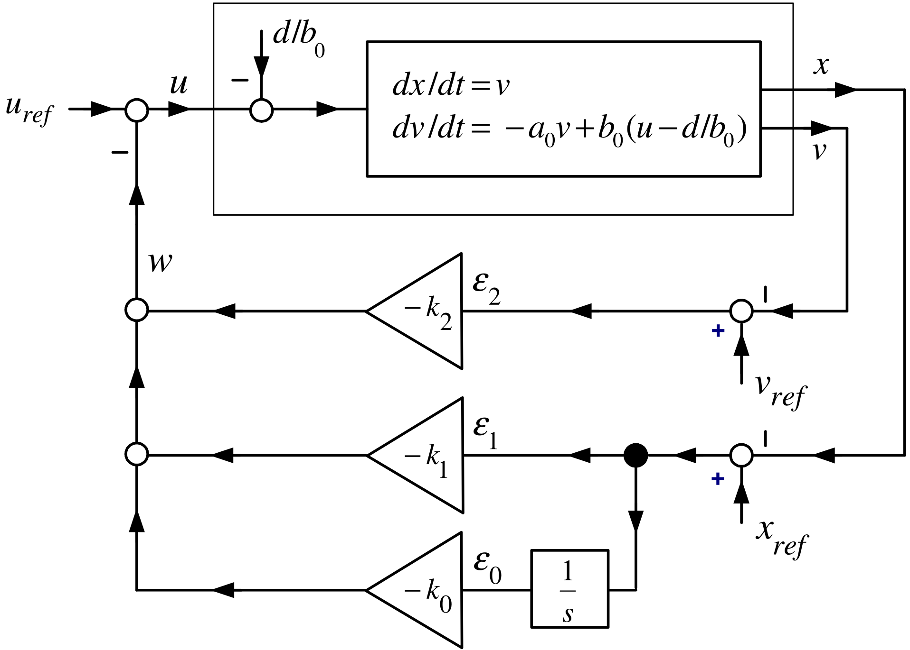
As \[\underset{sI-(A_{a}-b_{a}k_{a})}{\underbrace{\left[ \begin{array}{ccc} s & -1 & 0 \\ 0 & s & -1 \\ b_{0}k_{0} & b_{0}k_{1} & s+a_{0}+b_{0}k_{2} \end{array} \right] }}\left[ \begin{array}{c} E_{0}(s) \\ E_{1}(s) \\ E_{2}(s) \end{array} \right] =\left[ \begin{array}{c} \epsilon _{0}(0) \\ \epsilon _{1}(0) \\ \epsilon _{2}(0) \end{array} \right] +\left[ \begin{array}{c} 0 \\ 0 \\ \dfrac{d}{s} \end{array} \right] .\] Then \[\begin{aligned} \left( sI-(A_{a}-b_{a}k_{a})\right) ^{-1} &=\frac{1}{\underset{ \det \left( sI-(A_{a}-b_{a}k_{a})\right) }{\underbrace{ s^{3}+(b_{0}k_{2}+a_{0})s^{2}+b_{0}k_{1}s+b_{0}k_{0}}}}\times \\ &&\underset{adj\left( sI-(A_{a}-b_{a}k_{a})\right) }{\underbrace{ \left[ \begin{array}{ccc} s^{2}+(b_{0}k_{2}+a_{0})s+b_{0}k_{1} & s+b_{0}k_{2}+a_{0} & 1 \\ -b_{0}k_{0} & s^{2}+(b_{0}k_{2}+a_{0})s & s \\ -b_{0}k_{0}s & -\left( b_{0}k_{1}s+b_{0}k_{0}\right) & s^{2} \end{array} \right] }}. \end{aligned}\]
\[\begin{aligned} E_{0}(s) &=\frac{(s^{2}+(b_{0}k_{2}+a_{0})s+b_{0}k_{1})\epsilon _{0}(0)+(s+b_{0}k_{2}+a_{0})\epsilon _{1}(0)+\epsilon _{2}(0)+ \mathbf{d/s} }{s^{3}+(b_{0}k_{2}+a_{0})s^{2}+b_{0}k_{1}s+b_{0}k_{0}} \\ E_{1}(s) &=\frac{-b_{0}k_{0}\epsilon _{0}(0)+(s^{2}+(b_{0}k_{2}+a_{0})s)\epsilon _{1}(0)+s\epsilon _{2}(0)+s \mathbf{(d/s)} }{s^{3}+(b_{0}k_{2}+a_{0})s^{2}+b_{0}k_{1}s+b_{0}k_{0}} \\ E_{2}(s) &=\frac{-b_{0}k_{0}s\epsilon _{0}(0)-(b_{0}k_{1}s+b_{0}k_{0})\epsilon _{1}(0)+s^{2}\epsilon _{2}(0)+s^{2} \mathbf{(d/s)} }{\underset{\det \left( sI-(A_{a}-b_{a}k_{a})\right) }{\underbrace{ s^{3}+(b_{0}k_{2}+a_{0})s^{2}+b_{0}k_{1}s+b_{0}k_{0}}}} \end{aligned}\]
Choose \(k\) so that \[\begin{aligned} \det \left( sI-(A_{a}-b_{a}k_{a})\right) &=(s+r_{1})(s+r_{2})(s+r_{3}) \\ &=s^{3}+(r_{1}+r_{2}+r_{3})s^{2}+(r_{1}r_{2}+r_{1}r_{3}+r_{2}r_{3})s+r_{1}r_{2}r_{3}. \end{aligned}\] That is, \[\begin{aligned} k_{2} &=\frac{r_{1}+r_{2}+r_{3}-a_{0}}{b_{0}} \\ k_{1} &=\frac{r_{1}r_{2}+r_{1}r_{3}+r_{2}r_{3}}{b_{0}} \\ k_{0} &=\frac{r_{1}r_{2}r_{3}}{b_{0}}. \end{aligned}\]
\[\begin{aligned} E_{1}(s) &=\frac{-b_{0}k_{0}\epsilon _{0}(0)+\left( s^{2}+(b_{0}k_{2}+a_{0})s\right) \epsilon _{1}(0)+s\epsilon _{2}(0)+d}{ s^{3}+(b_{0}k_{2}+a_{0})s^{2}+b_{0}k_{1}s+b_{0}k_{0}} \\ &=\frac{A_{1}}{s+r_{1}}+\frac{B_{1}}{s+r_{2}}+\frac{C_{1}}{s+r_{3}} \\ \Longrightarrow x_{ref}(t)-x(t) &=\epsilon _{1}(t)=A_{1}e^{-r_{1}t}+B_{1}e^{-r_{2}t}+C_{1}e^{-r_{3}t}\rightarrow 0. \end{aligned}\]
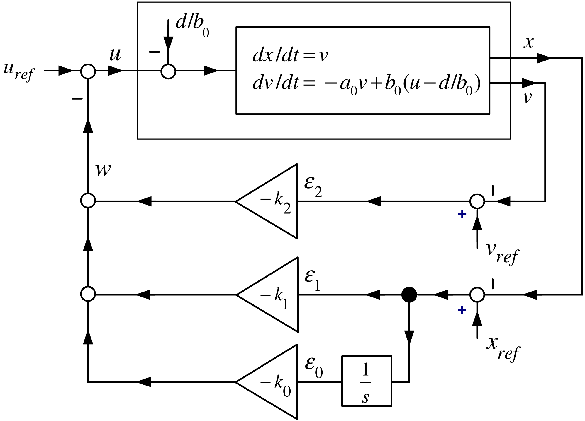
\[\begin{aligned} E_{2}(s) &=\frac{-b_{0}k_{0}s\epsilon _{0}(0)-(b_{0}k_{1}s+b_{0}k_{0})\epsilon _{1}(0)+s^{2}\epsilon _{2}(0)+sd}{ s^{3}+(b_{0}k_{2}+a_{0})s^{2}+b_{0}k_{1}s+b_{0}k_{0}} \\ &=\frac{A_{2}}{s+r_{1}}+\frac{B_{2}}{s+r_{2}}+\frac{C_{2}}{s+r_{3}} \\ \Longrightarrow v_{ref}(t)-v(t) &=\epsilon _{2}(t)=A_{2}e^{-r_{1}t}+B_{2}e^{-r_{2}t}+C_{2}e^{-r_{3}t}\rightarrow 0. \\ && \end{aligned}\]
\[\begin{aligned} \lim_{s\rightarrow 0}sE_{0}(s) &=\lim_{s\rightarrow 0}s\frac{ (s^{2}+(b_{0}k_{2}+a_{0})s+b_{0}k_{1})\epsilon _{0}(0)+(s+b_{0}k_{2}+a_{0})\epsilon _{1}(0)+\epsilon _{2}(0)+ \mathbf{(d/s)} }{s^{3}+(b_{0}k_{2}+a_{0})s^{2}+b_{0}k_{1}s+b_{0}k_{0}} \\ &=\frac{d}{b_{0}k_{0}}. \end{aligned}\]
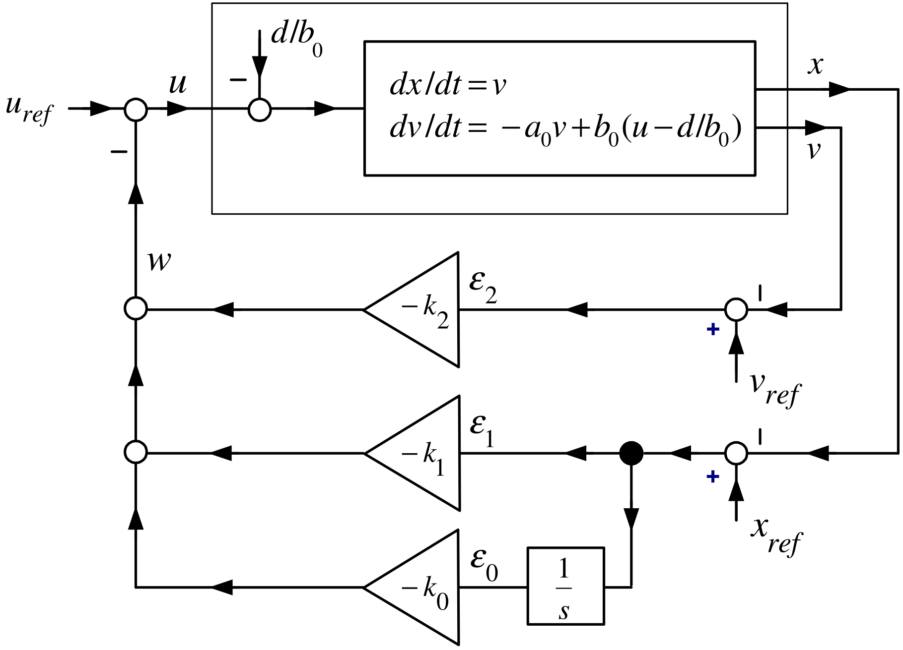
\[V(t)=u(t)=u_{ref}(t)+\left( k_{0}\int_{0}^{t}\epsilon _{1}(\tau )d\tau +k_{1}\epsilon _{1}(t)+k_{2}\epsilon _{2}(t)\right)\]
Motivation
Consider a general \(3^{rd}\) statespace system: \[\frac{d}{dt}\left[ \begin{array}{c} x_{1} \\ x_{2} \\ x_{3} \end{array} \right] =\underset{A}{\underbrace{\left[ \begin{array}{ccc} a_{11} & a_{12} & a_{13} \\ a_{21} & a_{22} & a_{23} \\ a_{31} & a_{32} & a_{33} \end{array} \right] }}\left[ \begin{array}{c} x_{1} \\ x_{2} \\ x_{3} \end{array} \right] +\underset{b}{\underbrace{\left[ \begin{array}{c} b_{1} \\ b_{2} \\ b_{3} \end{array} \right] }}u\]
We want to transform it into the control canonical form \[\frac{d}{dt}\left[ \begin{array}{c} x_{c1} \\ x_{c2} \\ x_{c3} \end{array} \right] =\underset{A_{c}}{\underbrace{\left[ \begin{array}{ccc} 0 & 1 & 0 \\ 0 & 0 & 1 \\ -\alpha _{0} & -\alpha _{1} & -\alpha _{2} \end{array} \right] }}\left[ \begin{array}{c} x_{c1} \\ x_{c2} \\ x_{c3} \end{array} \right] +\underset{b_{c}}{\underbrace{\left[ \begin{array}{c} 0 \\ 0 \\ 1 \end{array} \right] }}u\]
using a statespace transformation \[x_{c}=Tx,\text{}T\in \mathbb{R} ^{3\times 3},\det T\neq 0.\]
\[\frac{d}{dt}\left[ \begin{array}{c} x_{1} \\ x_{2} \\ x_{3} \end{array} \right] =\underset{A}{\underbrace{\left[ \begin{array}{ccc} a_{11} & a_{12} & a_{13} \\ a_{21} & a_{22} & a_{23} \\ a_{31} & a_{32} & a_{33} \end{array} \right] }}\left[ \begin{array}{c} x_{1} \\ x_{2} \\ x_{3} \end{array} \right] +\underset{b}{\underbrace{\left[ \begin{array}{c} b_{1} \\ b_{2} \\ b_{3} \end{array} \right] }}u.\]
Consider a general transformation given by \[x^{\prime }=Tx,\det T\neq 0.\]
Then \[\frac{d}{dt}x^{\prime }=T\frac{d}{dt}x=T(Ax+bu)=TAx+Tbu.\]
As \(\det T\neq 0\), we have \(x=T^{-1}x^{\prime }\) and \[\frac{d}{dt}x^{\prime }=\underset{A^{\prime }}{\underbrace{TAT}} ^{-1}x^{\prime }+\underset{b^{\prime }}{\underbrace{Tb}}u.\]
- \(T\) is an example of a similarity transformation.
Similarity Transformation
Let \[\frac{d}{dt}\left[ \begin{array}{c} x_{1} \\ x_{2} \\ x_{3} \end{array} \right] =\underset{A}{\underbrace{\left[ \begin{array}{ccc} a_{11} & a_{12} & a_{13} \\ a_{21} & a_{22} & a_{23} \\ a_{31} & a_{32} & a_{33} \end{array} \right] }}\left[ \begin{array}{c} x_{1} \\ x_{2} \\ x_{3} \end{array} \right] +\underset{b}{\underbrace{\left[ \begin{array}{c} b_{1} \\ b_{2} \\ b_{3} \end{array} \right] }}u.\]
Define the controllability matrix by \[\mathcal{C}\triangleq \left[ \begin{array}{ccc} b & Ab & A^{2}b \end{array} \right] \in \mathbb{R} ^{3\times 3}.\]
Suppose that \(\det \mathcal{C}\neq 0\) so that \(\mathcal{C}\) has an inverse.
Define the transformation \(T_{1}\) by \[T_{1}\triangleq \mathcal{C}^{-1}=\left[ \begin{array}{ccc} b & Ab & A^{2}b \end{array} \right] ^{-1}.\]
Similarity Transformation (continued)
The transformation \[T_{1}\triangleq \mathcal{C}^{-1}=\left[ \begin{array}{ccc} b & Ab & A^{2}b \end{array} \right] ^{-1}\]
with \(x^{\prime }\triangleq T_{1}x\) transforms \[\frac{d}{dt}x=Ax+bu\]
to \[\frac{d}{dt}x^{\prime }=\underset{A^{\prime }}{\underbrace{T_{1}AT_{1}^{-1}}} x^{\prime }+\underset{b^{\prime }}{\underbrace{T_{1}b}}u.\]
That is, \[A^{\prime }=T_{1}AT_{1}^{-1}\text{and}b^{\prime }=T_{1}b\] or \[T_{1}^{-1}A^{\prime }=AT_{1}^{-1}\text{\ and}T_{1}^{-1}b^{\prime }=b.\] Finally, \[\begin{aligned} &&\left[ \begin{array}{ccc} b & Ab & A^{2}b \end{array} \right] A^{\prime }=A\left[ \begin{array}{ccc} b & Ab & A^{2}b \end{array} \right] =\left[ \begin{array}{ccc} Ab & A^{2}b & A^{3}b \end{array} \right] \\ &&\text{and} \\ &&\left[ \begin{array}{ccc} b & Ab & A^{2}b \end{array} \right] b^{\prime }=b. \end{aligned}\]
Similarity Transformation (continued)
From previous slide: \[\begin{aligned} \left[ \begin{array}{ccc} b & Ab & A^{2}b \end{array} \right] A^{\prime } &=\left[ \begin{array}{ccc} Ab & A^{2}b & A^{3}b \end{array} \right] \\ \left[ \begin{array}{ccc} b & Ab & A^{2}b \end{array} \right] b^{\prime } &=b. \end{aligned}\]
By inspection \(A^{\prime }\) and \(b^{\prime }\) have the forms \[A^{\prime }=\left[ \begin{array}{ccc} 0 & 0 & a_{13}^{\prime } \\ 1 & 0 & a_{23}^{\prime } \\ 0 & 1 & a_{33}^{\prime } \end{array} \right] ,b^{\prime }=\left[ \begin{array}{c} 1 \\ 0 \\ 0 \end{array} \right] .\] Inserting \(A^{\prime }\) into the top equation above shows \(a_{13}^{\prime },a_{23}^{\prime },a_{33}^{\prime }\) must satisfy \[a_{13}^{\prime }b+a_{23}^{\prime }Ab+a_{33}^{\prime }A^{2}b=A^{3}b.\] Denote the characteristic polynomial as \[\det (sI-A)=s^{3}+\alpha _{2}s^{2}+\alpha _{1}s+\alpha _{0}.\] We have by the Cayley-Hamilton theorem \[A^{3}+\alpha _{2}A^{2}+\alpha _{1}A+\alpha _{0}I=0_{3\times 3} \Longrightarrow A^{3}b=-\alpha _{0}b-\alpha _{1}Ab-\alpha _{2}A^{2}b.\]
Similarity Transformation (continued)
We have shown that the transformation \[T_{1}\triangleq \mathcal{C}^{-1}=\left[ \begin{array}{ccc} b & Ab & A^{2}b \end{array} \right] ^{-1}\] takes \[\frac{d}{dt}x=Ax+bu\] to \[\frac{d}{dt}x^{\prime }=A^{\prime }x^{\prime }+b^{\prime }u\] where \[A^{\prime }=T_{1}AT_{1}^{-1}=\left[ \begin{array}{ccc} 0 & 0 & -\alpha _{0} \\ 1 & 0 & -\alpha _{1} \\ 0 & 1 & -\alpha _{2} \end{array} \right] ,\text{}b^{\prime }=T_{1}b=\left[ \begin{array}{c} 1 \\ 0 \\ 0 \end{array} \right] .\]
This is not control canonical form.
Note that \(A_{c}=(A^{\prime })^{T}\).
A direct calculation shows (or see theorem below) \[\det (sI-A^{\prime })=s^{3}+\alpha _{2}s^{2}+\alpha _{1}s+\alpha _{0}=\det (sI-A).\]
Similarity Transformation
Now suppose the system starts in control canonical form, i.e., \[\frac{d}{dt}\underset{x_{c}}{\underbrace{\left[ \begin{array}{c} x_{c1} \\ x_{c2} \\ x_{c3} \end{array} \right] }}=\underset{A_{c}}{\underbrace{\left[ \begin{array}{ccc} 0 & 1 & 0 \\ 0 & 0 & 1 \\ -\alpha _{0} & -\alpha _{1} & -\alpha _{2} \end{array} \right] }}\underset{x_{c}}{\underbrace{\left[ \begin{array}{c} x_{c1} \\ x_{c2} \\ x_{c3} \end{array} \right] }}+\underset{b_{c}}{\underbrace{\left[ \begin{array}{c} 0 \\ 0 \\ 1 \end{array} \right] }}u\] We know that \[\det (sI-A_{c})=\det \left[ \begin{array}{ccc} s & -1 & 0 \\ 0 & s & -1 \\ \alpha _{0} & \alpha _{1} & s+\alpha _{2} \end{array} \right] =s^{3}+\alpha _{2}s^{2}+\alpha _{1}s+\alpha _{0}.\] The controllability matrix is \[\mathcal{C}_{c}\triangleq \left[ \begin{array}{ccc} b_{c} & A_{c}b_{c} & A_{c}^{2}b_{c} \end{array} \right] \in \mathbb{R} ^{3\times 3}.\]
By the previous example with \(T_{2}\triangleq \mathcal{C}_{c}^{-1}\) and \(x^{\prime }=T_{2}x_{c}\): \[\frac{d}{dt}x^{\prime }=\underset{A^{\prime }}{\underbrace{ T_{2}A_{c}T_{2}^{-1}}}x^{\prime }+\underset{b^{\prime }}{\underbrace{ T_{2}b_{c}}}u=\left[ \begin{array}{ccc} 0 & 0 & -\alpha _{0} \\ 1 & 0 & -\alpha _{1} \\ 0 & 1 & -\alpha _{2} \end{array} \right] x^{\prime }+\left[ \begin{array}{c} 1 \\ 0 \\ 0 \end{array} \right] u.\]
Similarity Transformation (continued)
From the previous slide with \(T_{2}=\mathcal{C}_{c}^{-1}=\left[ \begin{array}{ccc} b_{c} & A_{c}b_{c} & A_{c}^{2}b_{c} \end{array} \right] ^{-1},\) \[\frac{d}{dt}x^{\prime }=\underset{A^{\prime }}{\underbrace{ T_{2}A_{c}T_{2}^{-1}}}x^{\prime }+\underset{b^{\prime }}{\underbrace{ T_{2}b_{c}}}u=\left[ \begin{array}{ccc} 0 & 0 & -\alpha _{0} \\ 1 & 0 & -\alpha _{1} \\ 0 & 1 & -\alpha _{2} \end{array} \right] x^{\prime }+\left[ \begin{array}{c} 1 \\ 0 \\ 0 \end{array} \right] u.\]
The inverse transformation \(x_{c}=T_{2}^{-1}x^{\prime }=\mathcal{C} _{c}x^{\prime }\) gives back the original system, i.e., \[\frac{d}{dt}x_{c}=T_{2}^{-1}\frac{d}{dt}x^{\prime }=T_{2}^{-1}(A^{\prime }x^{\prime }+b^{\prime }u)=T_{2}^{-1}(T_{2}A_{c}T_{2}^{-1}x^{\prime }+T_{2}b_{c}u)=A_{c}x_{c}+b_{c}u.\] That is, if a system is in the form \[\frac{d}{dt}x^{\prime }=\left[ \begin{array}{ccc} 0 & 0 & -\alpha _{0} \\ 1 & 0 & -\alpha _{1} \\ 0 & 1 & -\alpha _{2} \end{array} \right] x^{\prime }+\left[ \begin{array}{c} 1 \\ 0 \\ 0 \end{array} \right] u\] then \(x_{c}=T_{2}^{-1}x^{\prime }=\mathcal{C}_{c}x^{\prime }\) takes it into the control canonical form \[\frac{d}{dt}\underset{x_{c}}{\underbrace{\left[ \begin{array}{c} x_{c1} \\ x_{c2} \\ x_{c3} \end{array} \right] }}=\underset{A_{c}}{\underbrace{\left[ \begin{array}{ccc} 0 & 1 & 0 \\ 0 & 0 & 1 \\ -\alpha _{0} & -\alpha _{1} & -\alpha _{2} \end{array} \right] }}\underset{x_{c}}{\underbrace{\left[ \begin{array}{c} x_{c1} \\ x_{c2} \\ x_{c3} \end{array} \right] }}+\underset{b_{c}}{\underbrace{\left[ \begin{array}{c} 0 \\ 0 \\ 1 \end{array} \right] }}u.\]
Transformation to Control Canonical Form
Let a system be given by \[\frac{d}{dt}\left[ \begin{array}{c} x_{1} \\ x_{2} \\ x_{3} \end{array} \right] =\underset{A}{\underbrace{\left[ \begin{array}{ccc} a_{11} & a_{12} & a_{13} \\ a_{21} & a_{22} & a_{23} \\ a_{31} & a_{32} & a_{33} \end{array} \right] }}\left[ \begin{array}{c} x_{1} \\ x_{2} \\ x_{3} \end{array} \right] +\underset{b}{\underbrace{\left[ \begin{array}{c} b_{1} \\ b_{2} \\ b_{3} \end{array} \right] }}u.\]
Controllability Matrix: \(\mathcal{C}\triangleq \left[ \begin{array}{ccc} b & Ab & A^{2}b \end{array} \right] .\)
Characteristic Polynomial: \(\det (sI-A)=s^{3}+\alpha _{2}s^{2}+\alpha _{1}s+\alpha _{0}.\)
If \(\det \mathcal{C}\neq 0\) then the above system is transformed to the control canonical form \[\frac{d}{dt}\underset{x_{c}}{\underbrace{\left[ \begin{array}{c} x_{c1} \\ x_{c2} \\ x_{c3} \end{array} \right] }}=\underset{A_{c}}{\underbrace{\left[ \begin{array}{ccc} 0 & 1 & 0 \\ 0 & 0 & 1 \\ -\alpha _{0} & -\alpha _{1} & -\alpha _{2} \end{array} \right] }}\underset{x_{c}}{\underbrace{\left[ \begin{array}{c} x_{c1} \\ x_{c2} \\ x_{c3} \end{array} \right] }}+\underset{b_{c}}{\underbrace{\left[ \begin{array}{c} 0 \\ 0 \\ 1 \end{array} \right] }}u\] by the transformation \[x_{c}=\mathcal{C}_{c}\mathcal{C}^{-1}x\] where \[\mathcal{C}_{c}\triangleq \left[ \begin{array}{ccc} b_{c} & A_{c}b_{c} & A_{c}^{2}b_{c} \end{array} \right] .\]
Proof By the previous two examples.
Similarity Transformation
Consider a linear statespace system \[\frac{dx}{dt}=Ax+bu,A\in \mathbb{R} ^{n\times n},b\in \mathbb{R} ^{n}\] and an invertible matrix \(T\in \mathbb{R} ^{n\times n},\) i.e., \(\det (T)\neq 0\).
Then \[x^{\prime }=Tx\] gives \[\frac{dx^{\prime }}{dt}=TAT^{-1}x^{\prime }+Tbu.\] The transformation \[\begin{aligned} A &\rightarrow &TAT^{-1} \\ b &\rightarrow &Tb \end{aligned}\] is called a similarity transformation.
Characteristic Function is Invariant Under a Similarity Transformation
Let \[A^{\prime }=TAT^{-1}.\] Then \[\det (sI-A^{\prime })=\det (sI-A).\] Proof We have \[sI-A^{\prime }=TsT^{-1}-TAT^{-1}=T(sI-A)T^{-1}\] so \[\begin{aligned} \det (sI-A^{\prime }) &=\det (T(sI-A)T^{-1}) \\ &=\det T\det (sI-A)\det T^{-1} \\ &=\det (sI-A) \end{aligned}\] as \((\det T)(\det T^{-1})=1\).
Let \[\frac{dx_{c}}{dt}=A_{c}x_{c}+b_{c}u\] with \(A_{c},b_{c}\) in control canonical form, i.e., \[A_{c}=\left[ \begin{array}{ccc} 0 & 1 & 0 \\ 0 & 0 & 1 \\ -\alpha _{0} & -\alpha _{1} & -\alpha _{2} \end{array} \right] ,b_{c}=\left[ \begin{array}{c} 0 \\ 0 \\ 1 \end{array} \right] .\] We know that the characteristic polynomial of \(A_{c}\) is \[\det (sI-A_{c})=s^{3}+\alpha _{2}s^{2}+\alpha _{1}s+\alpha _{0}.\] With \[k_{c}=\left[ \begin{array}{ccc} k_{c1} & k_{c2} & k_{c3} \end{array} \right] ,\] use the state feedback \[u=-k_{c}x_{c}=-\left[ \begin{array}{ccc} k_{c1} & k_{c2} & k_{c3} \end{array} \right] \left[ \begin{array}{c} x_{c1} \\ x_{c2} \\ x_{c3} \end{array} \right] .\]
Closed-Loop System: \[\frac{dx_{c}}{dt}=(A_{c}-b_{c}k_{c})x_{c}\] \[\begin{aligned} A_{c}-b_{c}k_{c} &=\left[ \begin{array}{ccc} 0 & 1 & 0 \\ 0 & 0 & 1 \\ -\alpha _{0} & -\alpha _{1} & -\alpha _{2} \end{array} \right] -\left[ \begin{array}{c} 0 \\ 0 \\ 1 \end{array} \right] \left[ \begin{array}{ccc} k_{c1} & k_{c2} & k_{c3} \end{array} \right] \\ &=\left[ \begin{array}{ccc} 0 & 1 & 0 \\ 0 & 0 & 1 \\ -\alpha _{0}-k_{c1} & -\alpha _{1}-k_{c2} & -\alpha _{2}-k_{c3} \end{array} \right] . \end{aligned}\]
The closed-loop characteristic polynomial is \[\begin{aligned} \det \left( sI-(A_{c}-b_{c}k_{c})\right) & =\det \left( s\left[ \begin{array}{ccc} 1 & 0 & 0 \\ 0 & 1 & 0 \\ 0 & 0 & 1 \end{array} \right] -\left[ \begin{array}{ccc} 0 & 1 & 0 \\ 0 & 0 & 1 \\ -\alpha _{0}-k_{c1} & -\alpha _{1}-k_{c2} & -\alpha _{2}-k_{c3} \end{array} \right] \right) \\ & \\ & =s^{3}+(\alpha _{2}+k_{c3})s^{2}+(\alpha _{1}+k_{c2})s+\alpha _{0}+k_{c1}. \end{aligned}\]
Pole Placement
Choose \[k_{c1}=\alpha _{d0}-\alpha _{0},k_{c2}=\alpha _{d1}-\alpha _{1}, k_{c3}=\alpha _{d2}-\alpha _{2}\] so \[\begin{aligned} \det \left( sI-(A_{c}-b_{c}k_{c})\right) &=s^{3}+(\alpha _{2}+k_{c3})s^{2}+s(\alpha _{1}+k_{c2})+\alpha _{0}+k_{c1} \\ &=s^{3}+\alpha _{d2}s^{2}+\alpha _{d1}s+\alpha _{d0}. \end{aligned}\]
E.g. with \(r_{1}>0,r_{2}>0,r_{3}>0\), set \[\begin{aligned} s^{3}+\alpha _{d2}s^{2}+\alpha _{d1}s+\alpha _{d0} &=(s+r_{1})(s+r_{2})(s+r_{3}) \\ &&s^{3}+\underset{\alpha _{d2}}{\underbrace{(r_{1}+r_{2}+r_{3})}}s^{2}+ \underset{\alpha _{d1}}{\underbrace{(r_{1}r_{2}+r_{1}r_{3}+r_{2}r_{3})}}s+ \underset{\alpha _{d0}}{\underbrace{r_{1}r_{2}r_{3}}} \end{aligned}\]
- If the system is in control canonical form then pole placement is easy.
Consider the system \[\frac{d}{dt}x=Ax+bu,A\in \mathbb{R} ^{3\times 3},b\in \mathbb{R} ^{3}\]
with \[\det (sI-A)=s^{3}+\alpha _{2}s^{2}+\alpha _{1}s+\alpha _{0}\]
and \[\det \mathcal{C}=\det \left[ \begin{array}{ccc} b & Ab & A^{2}b \end{array} \right] \neq 0.\]
Then \[x_{c}=\mathcal{C}_{c}\mathcal{C}^{-1}x\] results in \[\frac{d}{dt}\underset{x_{c}}{\underbrace{\left[ \begin{array}{c} x_{c1} \\ x_{c2} \\ x_{c3} \end{array} \right] }}=\underset{A_{c}}{\underbrace{\left[ \begin{array}{ccc} 0 & 1 & 0 \\ 0 & 0 & 1 \\ -\alpha _{0} & -\alpha _{1} & -\alpha _{2} \end{array} \right] }}\underset{x_{c}}{\underbrace{\left[ \begin{array}{c} x_{c1} \\ x_{c2} \\ x_{c3} \end{array} \right] }}+\underset{b_{c}}{\underbrace{\left[ \begin{array}{c} 0 \\ 0 \\ 1 \end{array} \right] }}u.\]
\[\frac{d}{dt}\underset{x_{c}}{\underbrace{\left[ \begin{array}{c} x_{c1} \\ x_{c2} \\ x_{c3} \end{array} \right] }}=\underset{A_{c}}{\underbrace{\left[ \begin{array}{ccc} 0 & 1 & 0 \\ 0 & 0 & 1 \\ -\alpha _{0} & -\alpha _{1} & -\alpha _{2} \end{array} \right] }}\underset{x_{c}}{\underbrace{\left[ \begin{array}{c} x_{c1} \\ x_{c2} \\ x_{c3} \end{array} \right] }}+\underset{b_{c}}{\underbrace{\left[ \begin{array}{c} 0 \\ 0 \\ 1 \end{array} \right] }}u.\] The feedback \[u=-k_{c}x_{c}=-\left[ \begin{array}{ccc} \alpha _{d0}-\alpha _{0} & \alpha _{d1}-\alpha _{1} & \alpha _{d2}-\alpha _{2} \end{array} \right] \left[ \begin{array}{c} x_{c1} \\ x_{c2} \\ x_{c3} \end{array} \right]\] results in \[\det (sI-(A_{c}-b_{c}k_{c}))=s^{3}+\alpha _{d2}s^{2}+\alpha _{d1}s+\alpha _{d0}.\]
In the original coordinate system the feedback \[u=-k_{c}x_{c}=-\underset{k}{\underbrace{k_{c}\mathcal{C}_{c}\mathcal{C}^{-1}} }x\] results in \[\det (sI-(A-bk))=s^{3}+\alpha _{d2}s^{2}+\alpha _{d1}s+\alpha _{d0}.\]
Cart on the Track System \[\begin{aligned} \frac{d}{dt}\left[ \begin{array}{c} \epsilon _{1} \\ \epsilon _{2} \end{array} \right] &=\underset{A}{\underbrace{\left[ \begin{array}{cc} 0 & 1 \\ 0 & -a_{0} \end{array} \right] }}\left[ \begin{array}{c} \epsilon _{1} \\ \epsilon _{2} \end{array} \right] +\underset{b}{\underbrace{\left[ \begin{array}{c} 0 \\ b_{0} \end{array} \right] }}w+\left[ \begin{array}{c} 0 \\ 1 \end{array} \right] d \\ \det (sI-A) &=s(s+a_{0})=s^{2}+a_{0}s=s^{2}+\alpha _{1}s+\alpha _{0} \end{aligned}\] We compute \[\begin{aligned} \mathcal{C} &\mathcal{=}&\left[ \begin{array}{cc} b & Ab \end{array} \right] =\left[ \begin{array}{cr} 0 & b_{0} \\ b_{0} & -a_{0}b_{0} \end{array} \right] \\ \mathcal{C}^{-1} &=-\frac{1}{b_{0}^{2}}\left[ \begin{array}{cr} -a_{0}b_{0} & -b_{0} \\ -b_{0} & 0 \end{array} \right] =\frac{1}{b_{0}}\left[ \begin{array}{cr} a_{0} & 1 \\ 1 & 0 \end{array} \right] . \end{aligned}\] and \[\begin{aligned} A_{c} &=\left[ \begin{array}{cc} 0 & 1 \\ -\alpha _{0} & -\alpha _{1} \end{array} \right] =\left[ \begin{array}{cc} 0 & 1 \\ 0 & -a_{0} \end{array} \right] ,b_{c}=\left[ \begin{array}{c} 0 \\ 1 \end{array} \right] \\ \mathcal{C}_{c} &=\left[ \begin{array}{cc} b_{c} & A_{c}b_{c} \end{array} \right] =\left[ \begin{array}{cc} 0 & 1 \\ 1 & -a_{0} \end{array} \right] . \end{aligned}\]
Cart on the Track System (continued)
Desired closed-loop characteristic polynomial: \[(s+r_{1})(s+r_{2})=s^{2}+\underset{\alpha _{d1}}{\underbrace{(r_{1}+r_{2})}} s+\underset{\alpha _{d0}}{\underbrace{r_{1}r_{2}}}\]
Feedback gain: \[\begin{aligned} k &=k_{c}\mathcal{C}_{c}\mathcal{C}^{-1} \\ &=\left[ \begin{array}{cc} r_{1}r_{2}-0 & r_{1}+r_{2}-a_{0} \end{array} \right] \left[ \begin{array}{cc} 0 & 1 \\ 1 & -a_{0} \end{array} \right] \frac{1}{b_{0}}\left[ \begin{array}{cr} a_{0} & 1 \\ 1 & 0 \end{array} \right] \\ &=\left[ \begin{array}{cc} \dfrac{r_{1}r_{2}}{b_{0}} & \dfrac{r_{1}+r_{2}-a_{0}}{b_{0}} \end{array} \right] . \end{aligned}\]
Same result as previously found! See slide the earlier derivation.
Magnetic Levitation \[\frac{d}{dt}\left[ \begin{array}{c} i-i_{eq} \\ x-x_{eq} \\ v-v_{eq} \end{array} \right] =\underset{A}{\underbrace{\left[ \begin{array}{ccc} -\dfrac{R}{L_{0}} & 0 & \dfrac{rL_{1}}{L_{0}}\dfrac{i_{eq}}{x_{eq}^{2}} \\ 0 & 0 & 1 \\ -\dfrac{2g}{i_{eq}} & \dfrac{2g}{x_{eq}} & 0 \end{array} \right] }}\left[ \begin{array}{c} i-i_{eq} \\ x-x_{eq} \\ v-v_{eq} \end{array} \right] +\underset{b}{\underbrace{\left[ \begin{array}{c} \dfrac{1}{L_{0}} \\ 0 \\ 0 \end{array} \right] }}(u-u_{eq})\] Set \[A=\left[ \begin{array}{ccc} a_{11} & 0 & a_{13} \\ 0 & 0 & 1 \\ a_{31} & a_{32} & 0 \end{array} \right] ,b=\left[ \begin{array}{c} b_{1} \\ 0 \\ 0 \end{array} \right]\] so that \[\begin{aligned} \det \left( sI-A\right) &=\det \left[ \begin{array}{ccc} s-a_{11} & 0 & -a_{13} \\ 0 & s & -1 \\ -a_{31} & -a_{32} & s \end{array} \right] \\ &=s^{3}-a_{11}s^{2}-(a_{13}a_{31}+a_{32})s+a_{11}a_{32} \\ &=s^{3}+\alpha _{2}s^{2}+\alpha _{1}s+\alpha _{0}. \end{aligned}\]
Magnetic Levitation (continued)
Controllability Matrix
\[\begin{aligned} \mathcal{C} &=\left[ \begin{array}{ccc} b & Ab & A^{2}b \end{array} \right] =\left[ \begin{array}{crr} b_{1} & a_{11}b_{1} & b_{1}a_{11}^{2}+b_{1}a_{13}a_{31} \\ 0 & 0 & b_{1}a_{31} \\ 0 & a_{31}b_{1} & b_{1}a_{11}a_{31} \end{array} \right]. \end{aligned}\]
\[\begin{aligned} \mathcal{C}^{-1} &=-\frac{1}{b_{1}^{3}a_{31}^{2}}\left[ \begin{array}{ccc} -b_{1}^{2}a_{31}^{2} & b_{1}^{2}a_{13}a_{31}^{2} & b_{1}^{2}a_{11}a_{31} \\ 0 & b_{1}^{2}a_{11}a_{31} & -b_{1}^{2}a_{31} \\ 0 & -b_{1}^{2}a_{31} & 0 \end{array} \right], \\ &=\left[ \begin{array}{ccc} \dfrac{1}{b_{1}} & -\dfrac{a_{13}}{b_{1}} & -\dfrac{a_{11}}{b_{1}a_{31}} \\ 0 & -\dfrac{a_{11}}{b_{1}a_{31}} & \dfrac{1}{b_{1}a_{31}} \\ 0 & \dfrac{1}{b_{1}a_{31}} & 0 \end{array} \right] . \end{aligned}\]
Magnetic Levitation (continued)
We showed \(\det \left( sI-A\right) =s^{3}-a_{11}s^{2}-(a_{13}a_{31}+a_{32})s+a_{11}a_{32}.\)
Control Canonical Form \[A_{c}=\left[ \begin{array}{ccc} 0 & 1 & 0 \\ 0 & 0 & 1 \\ -\alpha _{0} & -\alpha _{1} & -\alpha _{2} \end{array} \right] ,b_{c}=\left[ \begin{array}{c} 0 \\ 0 \\ 1 \end{array} \right]\] \[\begin{aligned} \mathcal{C}_{c}\mathcal{=}\left[ \begin{array}{ccc} b_{c} & A_{c}b_{c} & A_{c}^{2}b_{c} \end{array} \right] &=\left[ \begin{array}{ccc} 0 & 0 & 1 \\ 0 & 1 & -\alpha _{2} \\ 1 & -\alpha _{2} & \alpha _{2}^{2}-\alpha _{1} \end{array} \right] \\ &=\left[ \begin{array}{ccc} 0 & 0 & 1 \\ 0 & 1 & a_{11} \\ 1 & a_{11} & a_{11}^{2}+a_{13}a_{31}+a_{32} \end{array} \right] . \end{aligned}\] Set \[\begin{aligned} s^{3}+\alpha _{d2}s^{2}+\alpha _{d1}s+\alpha _{d0} &=s^{3}+\underset {\alpha _{d2}}{\underbrace{(r_{1}+r_{2}+r_{3})}}s^{2}+\underset{\alpha _{d1}}{\underbrace{(r_{1}r_{2}+r_{1}r_{3}+r_{2}r_{3})}}s+\underset{\alpha _{d0}}{\underbrace{r_{1}r_{2}r_{3}}} \\ &=(s+r_{1})(s+r_{2})(s+r_{3}). \end{aligned}\]
Magnetic Levitation (continued)
Write
\[\begin{aligned} \gamma _0&=r_{1}r_{2}r_{3}-a_{11}a_{32}, \\ \gamma _1&=r_{1}r_{2}+r_{1}r_{3}+r_{2}r_{3}+a_{13}a_{31}+a_{32}, \\ \gamma _2&=r_{1}+r_{2}+r_{3}+a_{11}. \end{aligned}\]
Then
\[\begin{aligned} k&=k_{c}\mathcal{C}_{c}\mathcal{C}^{-1} \\ &=\left[\begin{array}{ccc}\gamma _0&\gamma _1&\gamma _2\end{array}\right] \left[ \begin{array}{ccc} 0 & 0 & 1 \\ 0 & 1 & a_{11} \\ 1 & a_{11} & a_{11}^{2}+a_{13}a_{31}+a_{32} \end{array} \right]\mathcal{C}^{-1}. \end{aligned}\]
Using the inverse from the previous slide gives \(k=[\,k_1\;k_2\;k_3\,]\), where
\[\begin{aligned} k_1&=\frac{r_1+r_2+r_3+a_{11}}{b_1}, \\ k_2&=\frac{r_1r_2r_3+(r_1+r_2+r_3)a_{32}}{b_1a_{31}}, \\ k_3&=\frac{r_1r_2+r_1r_3+r_2r_3+a_{13}a_{31}+a_{32}}{b_1a_{31}}. \end{aligned}\]
This is the same gain row vector obtained in the earlier derivation.
We are given the linear system \[\frac{dx}{dt}=Ax+bu.\] Let \(x_{eq}\) be an eq pt with corresponding input \(u_{eq}\), i.e., \[0=\frac{dx_{eq}}{dt}=Ax_{eq}+bu_{eq}.\] Use state feedback to force \(x(t)\rightarrow x_{eq}.\)
Error Dynamics \[\frac{d}{dt}(x-x_{eq})=Ax+bu-(Ax_{eq}+bu_{eq})=A(x-x_{eq})+b(u-u_{eq}).\]
The state feedback \[u-u_{eq}=-k(x-x_{eq})\] results in \[\frac{d}{dt}(x-x_{eq})=(A-bk)(x-x_{eq}).\] With \((A,b)\) controllable, \(k\) can be (and is) chosen so \((A-bk)\) is stable. Then \[x(t)-x_{eq}=e^{(A-bk)t}(x(0)-x_{eq})\rightarrow 0.\] The input \(u\) is given by \(u(t)=-k(x(t)-x_{eq})+u_{eq}\rightarrow u_{eq}.\)
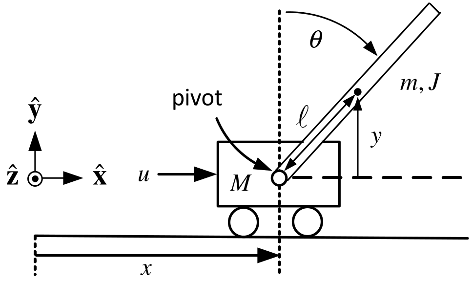
Statespace Model and Equilibrium Points
\[\dot z=Az+bu, \qquad z=\left[ \begin{array}{c} x \\ v \\ \theta \\ \omega \end{array} \right].\]
\[A=\left[ \begin{array}{cccc} 0 & 1 & 0 & 0 \\ 0 & 0 & -\dfrac{gm^{2}\ell ^{2}}{Mm\ell ^{2}+J(M+m)} & 0 \\ 0 & 0 & 0 & 1 \\ 0 & 0 & \dfrac{mg\ell (M+m)}{Mm\ell ^{2}+J(M+m)} & 0 \end{array} \right], \qquad b=\left[ \begin{array}{c} 0 \\ \dfrac{J+m\ell ^{2}}{Mm\ell ^{2}+J(M+m)} \\ 0 \\ -\dfrac{m\ell }{Mm\ell ^{2}+J(M+m)} \end{array} \right].\]
\[z_{eq}=\left[ \begin{array}{c} x_{0} \\ 0 \\ 0 \\ 0 \end{array} \right], \qquad u_{eq}=0, \qquad (A,b)\text{ is controllable}.\]
We can find \(k\in \mathbb{R} ^{1\times 4}\) so \(u=u_{eq}-k(z-z_{eq})=-k(z-z_{eq})\) gives
\(\dfrac{d}{dt}(z-z_{eq})=(A-bk)(z-z_{eq})\) with \(A-bk\) stable so \(z(t)\rightarrow z_{eq}.\)
Can we make the cart position \(x(t)\rightarrow x_{ref}\) where \(x_{ref}\) is arbitrary? \[\begin{aligned} \underset{dz/dt}{\underbrace{\left[ \begin{array}{c} dx/dt \\ dv/dt \\ d\theta /dt \\ d\omega /dt \end{array} \right] }} &=\underset{A}{\underbrace{\left[ \begin{array}{cccc} 0 & 1 & 0 & 0 \\ 0 & 0 & -\dfrac{gm^{2}\ell ^{2}}{Mm\ell ^{2}+J(M+m)} & 0 \\ 0 & 0 & 0 & 1 \\ 0 & 0 & \dfrac{mg\ell (M+m)}{Mm\ell ^{2}+J(M+m)} & 0 \end{array} \right] }}\underset{z}{\underbrace{\left[ \begin{array}{c} x \\ v \\ \theta \\ \omega \end{array} \right] }}+\underset{b}{\underbrace{\left[ \begin{array}{c} 0 \\ \dfrac{J+m\ell ^{2}}{Mm\ell ^{2}+J(M+m)} \\ 0 \\ -\dfrac{m\ell }{Mm\ell ^{2}+J(M+m)} \end{array} \right] }}u \\ y &=\underset{c}{\underbrace{\left[ \begin{array}{cccc} 1 & 0 & 0 & 0 \end{array} \right] }}\underset{z}{\underbrace{\left[ \begin{array}{c} x \\ v \\ \theta \\ \omega \end{array} \right] }}. \end{aligned}\] Transfer Function \[G(s)=\frac{X(s)}{U(s)}=\frac{\kappa (J+m\ell ^{2})s^{2}-\kappa mg\ell }{ s^{2}(s^{2}-\alpha ^{2})}\] \[\alpha ^{2}=\frac{mg\ell (M+m)}{Mm\ell ^{2}+J(M+m)},\kappa =\frac{1 }{Mm\ell ^{2}+J(M+m)}.\]
Choose \(u=-kz\) to place the closed-loop poles.
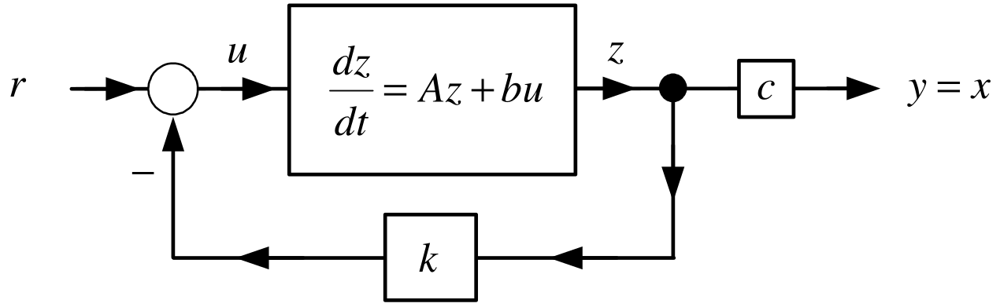
Equivalent block diagram
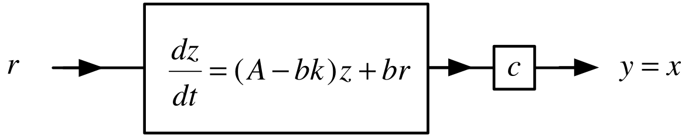
Transfer function representation
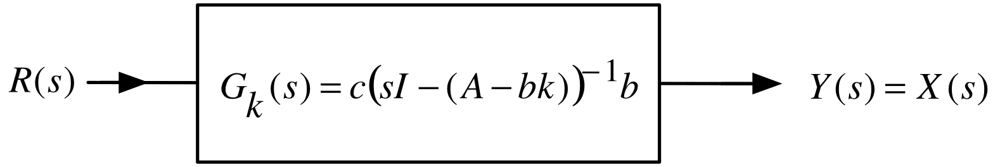
Add integrator to track step inputs
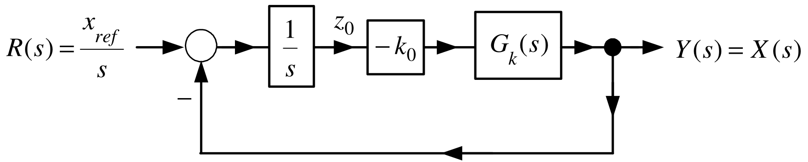
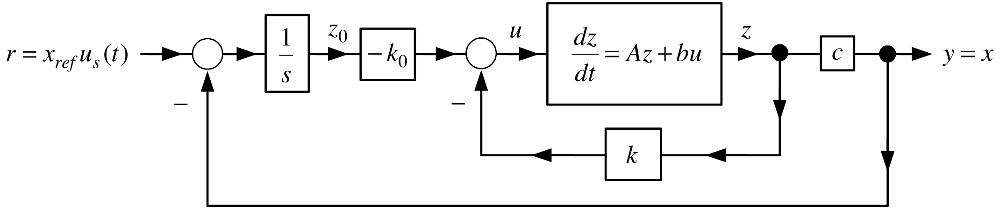
If \(k_{0}\) can be chosen so that the closed-loop system is stable then \(x(t)\rightarrow x_{ref}.\) \[\begin{aligned} \frac{dz}{dt} &=Az+bu \\ u &=-kz-k_{0}z_{0} \\ y &=cz=x \\ \frac{dz_{0}}{dt} &=x_{ref}-x \end{aligned}\] or \[\begin{aligned} \frac{d}{dt}\underset{\in \mathbb{R} ^{5}}{\underbrace{\left[ \begin{array}{c} z \\ z_{0} \end{array} \right] }} &=\underset{A_{a}\in \mathbb{R} ^{5\times 5}}{\underbrace{\left[ \begin{array}{cc} A & 0_{4\times 1} \\ -c & 0 \end{array} \right] }}\underset{\in \mathbb{R} ^{5}}{\underbrace{\left[ \begin{array}{c} z \\ z_{0} \end{array} \right] }}+\underset{b_{a}\in \mathbb{R} ^{5}}{\underbrace{\left[ \begin{array}{c} b \\ 0 \end{array} \right] }}u+\underset{p\in \mathbb{R} ^{5}}{\underbrace{\left[ \begin{array}{c} 0_{4\times 1} \\ 1 \end{array} \right] }}x_{ref} \\ u &=-\underset{\in \mathbb{R} ^{1\times 5}}{\underbrace{\left[ \begin{array}{cc} k & k_{0} \end{array} \right] }}\left[ \begin{array}{c} z \\ z_{0} \end{array} \right] . \end{aligned}\]
\[\begin{aligned} \frac{d}{dt}\underset{\in \mathbb{R} ^{5}}{\underbrace{\left[ \begin{array}{c} z \\ z_{0} \end{array} \right] }} &=\underset{A_{a}\in \mathbb{R} ^{5\times 5}}{\underbrace{\left[ \begin{array}{cc} A & 0_{4\times 1} \\ -c & 0 \end{array} \right] }}\underset{\in \mathbb{R} ^{5}}{\underbrace{\left[ \begin{array}{c} z \\ z_{0} \end{array} \right] }}+\underset{b_{a}\in \mathbb{R} ^{5}}{\underbrace{\left[ \begin{array}{c} b \\ 0 \end{array} \right] }}u+\underset{\in \mathbb{R} ^{5}}{\underbrace{\left[ \begin{array}{c} 0_{4\times 1} \\ 1 \end{array} \right] }}x_{ref} \\ u &=-\underset{\in \mathbb{R} ^{1\times 5}}{\underbrace{\left[ \begin{array}{cc} k & k_{0} \end{array} \right] }}\underset{\in \mathbb{R} ^{5}}{\underbrace{\left[ \begin{array}{c} z \\ z_{0} \end{array} \right] }}. \end{aligned}\] \[\begin{aligned} \frac{d}{dt}\left[ \begin{array}{c} z \\ z_{0} \end{array} \right] &=\left[ \begin{array}{cc} A & 0_{4\times 1} \\ -c & 0 \end{array} \right] \left[ \begin{array}{c} z \\ z_{0} \end{array} \right] -\left[ \begin{array}{c} b \\ 0 \end{array} \right] \left[ \begin{array}{cc} k & k_{0} \end{array} \right] \left[ \begin{array}{c} z \\ z_{0} \end{array} \right] +\left[ \begin{array}{c} 0_{4\times 1} \\ 1 \end{array} \right] x_{ref} \\ &=\left( \left[ \begin{array}{cc} A & 0_{4\times 1} \\ -c & 0 \end{array} \right] -\left[ \begin{array}{lc} bk & bk_{0} \\ 0_{4\times 1} & 0 \end{array} \right] \right) \left[ \begin{array}{c} z \\ z_{0} \end{array} \right] +\left[ \begin{array}{c} 0_{4\times 1} \\ 1 \end{array} \right] x_{ref} \\ &=\left[ \begin{array}{cc} A-bk & -bk_{0} \\ -c & 0 \end{array} \right] \left[ \begin{array}{c} z \\ z_{0} \end{array} \right] +\left[ \begin{array}{c} 0_{4\times 1} \\ 1 \end{array} \right] x_{ref} \end{aligned}\] Find \(k\in \mathbb{R} ^{1\times 4},k_{0}\in \mathbb{R}\) such that \[\left[ \begin{array}{cc} A-bk & -bk_{0} \\ -c & 0 \end{array} \right]\] is a stable matrix.
Theorem Controllability of the Augmented System
Let \((A,b)\) be controllable. Further, suppose \[G(s)=\frac{n(s)}{d(s)}\triangleq c(sI-A)^{-1}b\] is such that \(n(0)\neq 0.\) Then the augmented system \((A_{a},b_{a})\) defined as \[A_{a}\triangleq \left[ \begin{array}{cc} A & 0_{4\times 1} \\ -c & 0 \end{array} \right] \in \mathbb{R} ^{5\times 5},b_{a}\triangleq \left[ \begin{array}{c} b \\ 0 \end{array} \right] \in \mathbb{R} ^{5}\] is controllable.
Proof See Appendix.
In the case of the inverted pendulum \((A,b)\) is controllable and \[G(s)=\frac{n(s)}{d(s)}=\frac{\kappa (J+m\ell ^{2})s^{2}-\kappa mg\ell }{ s^{2}(s^{2}-\alpha ^{2})}\text{\ satisfies}n(0)=-\kappa mg\ell \neq 0.\] \(\Longrightarrow\) Can choose \(\left[ \begin{array}{cc} k & k_{0} \end{array} \right] \in \mathbb{R} ^{1\times 5}\) to place the eigenvalues of \[\left[ \begin{array}{cc} A & 0_{4\times 1} \\ -c & 0 \end{array} \right] -\left[ \begin{array}{c} b \\ 0 \end{array} \right] \left[ \begin{array}{cc} k & k_{0} \end{array} \right] =\left[ \begin{array}{cc} A-bk & -bk_{0} \\ -c & 0 \end{array} \right] .\]
\(x(t)\rightarrow x_{ref},\) but do \(v(t),\theta (t)\mathbf{,}\) and \(\omega (t)\) go to zero? \[\frac{d}{dt}\underset{\in \mathbb{R} ^{5}}{\underbrace{\left[ \begin{array}{c} z \\ z_{0} \end{array} \right] }}=\underset{A_{a}\in \mathbb{R} ^{5\times 5}}{\underbrace{\left[ \begin{array}{cc} A & 0_{4\times 1} \\ -c & 0 \end{array} \right] }}\underset{\in \mathbb{R} ^{5}}{\underbrace{\left[ \begin{array}{c} z \\ z_{0} \end{array} \right] }}+\underset{b_{a}\in \mathbb{R} ^{5}}{\underbrace{\left[ \begin{array}{c} b \\ 0 \end{array} \right] }}u+\underset{\in \mathbb{R} ^{5}}{\underbrace{\left[ \begin{array}{c} 0_{4\times 1} \\ 1 \end{array} \right] }}x_{ref}\] In compact form \[\frac{dz_{a}}{dt}=A_{a}z_{a}+b_{a}u+p_{a}x_{ref}.\] Equilibrium points \[0_{5\times 1}=\frac{dz_{a_eq}}{dt}=A_{a}z_{a_eq}+b_{a}u_{eq}+p_{a}x_{ref}\] Equilibrium points have the form (see next slide) \[z_{a_eq}=\left[ \begin{array}{c} z_{eq} \\ z_{0_eq} \end{array} \right] =\left[ \begin{array}{c} x_{ref} \\ 0 \\ 0 \\ 0 \\ z_{0_eq} \end{array} \right] ,u_{eq}=0\]
Equilibrium points \[z_{a_eq}=\left[ \begin{array}{c} z_{eq} \\ z_{0_eq} \end{array} \right] =\left[ \begin{array}{c} x_{ref} \\ 0 \\ 0 \\ 0 \\ z_{0_eq} \end{array} \right] ,u_{eq}=0\] Verification \[\begin{aligned} \left[ \begin{array}{c} 0 \\ 0 \\ 0 \\ 0 \\ 0 \end{array} \right] &=\underset{A_{a}}{\underbrace{\left[ \begin{array}{ccccc} 0 & 1 & 0 & 0 & 0 \\ 0 & 0 & -\dfrac{gm^{2}\ell ^{2}}{Mm\ell ^{2}+J(M+m)} & 0 & 0 \\ 0 & 0 & 0 & 1 & 0 \\ 0 & 0 & \dfrac{mg\ell (M+m)}{Mm\ell ^{2}+J(M+m)} & 0 & 0 \\ -1 & 0 & 0 & 0 & 0 \end{array} \right] }}\underset{z_{a_eq}}{\underbrace{\left[ \begin{array}{c} x_{ref} \\ 0 \\ 0 \\ 0 \\ z_{0_eq} \end{array} \right] }}+\underset{b_{a}}{\underbrace{\left[ \begin{array}{c} 0 \\ \dfrac{J+m\ell ^{2}}{Mm\ell ^{2}+J(M+m)} \\ 0 \\ -\dfrac{m\ell }{Mm\ell ^{2}+J(M+m)} \\ 0 \end{array} \right] }}u_{eq} \\ &&+\left[ \begin{array}{c} 0 \\ 0 \\ 0 \\ 0 \\ 1 \end{array} \right] x_{ref}. \end{aligned}\]
Error System
Subtract the equilibrium equations \[0_{5\times 1}=A_{a}z_{a_eq}+b_{a}u_{eq}+p_{a}x_{ref}\] from the system model \[\frac{dz_{a}}{dt}=A_{a}z_{a}+b_{a}u+p_{a}x_{ref}\] to obtain \[\begin{aligned} \frac{d}{dt}(z_{a}-z_{a_eq}) &=A_{a}z_{a}+b_{a}u+p_{a}x_{ref}-(A_{a}z_{a_eq}+bu_{eq}+p_{a}x_{ref}) \\ &=A_{a}(z_{a}-z_{a_eq})+b_{a}(u-u_{eq}). \end{aligned}\]
As the pair \((A_{a},b_{a})\) is controllable, \(k_{a}\) can then be chosen so that \(A_{a}-b_{a}k_{a}\) is stable.
The feedback \[u-u_{eq}=u=-k_{a}(z_{a}-z_{a_eq})\] results in \[\frac{d}{dt}(z_{a}-z_{a_eq})=(A_{a}-b_{a}k_{a})(z_{a}-z_{a_eq})\] so \[z_{a}(t)-z_{a_eq}=e^{(A_{a}-b_{a}k_{a})t}(z_{a}(0)-z_{a_eq})\rightarrow 0.\]
What about the value of \(z_{0_eq}\mathbf{?}\)

In the figure \[u=-\left[ \begin{array}{cc} k & k_{0} \end{array} \right] \left[ \begin{array}{c} z \\ z_{0} \end{array} \right]\] not \[u=-\left[ \begin{array}{cc} k & k_{0} \end{array} \right] \left( \left[ \begin{array}{c} z \\ z_{0} \end{array} \right] -\left[ \begin{array}{c} z_{eq} \\ z_{0_eq} \end{array} \right] \right) .\] These are the same if \[\begin{aligned} \left[ \begin{array}{cc} k & k_{0} \end{array} \right] \left[ \begin{array}{c} z_{eq} \\ z_{0_eq} \end{array} \right] &=\underset{k_{a}}{\underbrace{\left[ \begin{array}{ccccc} k_{1} & k_{2} & k_{3} & k_{4} & k_{0} \end{array} \right] }}\left[ \begin{array}{c} x_{ref} \\ 0 \\ 0 \\ 0 \\ z_{0_eq} \end{array} \right] =0 \\ \text{or}z_{0_eq} &=-(k_{1}/k_{0})x_{ref}. \end{aligned}\]
The value of \(z_{0_eq}\mathbf{.}\)
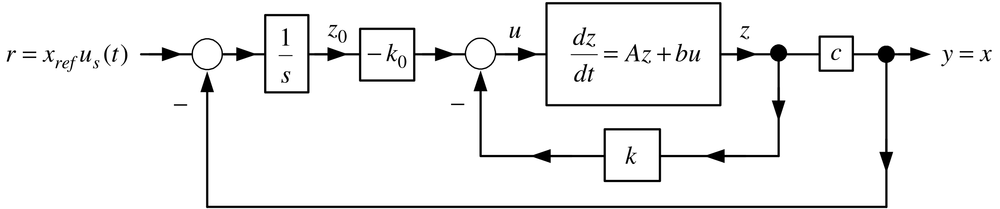
That is, the feedback \(u=-k_{a}z_{a}\) applied to \[\frac{dz_{a}}{dt}=A_{a}z_{a}+b_{a}u+p_{a}x_{ref}\]
results in \[z_{a}(t)\rightarrow z_{a_eq}=\left[ \begin{array}{c} x_{ref} \\ 0 \\ 0 \\ 0 \\ -(k_{1}/k_{0})x_{ref} \end{array} \right] \text{and so}k_{a}z_{a_eq}=0.\]

← Course Home · System Modeling and Control · Chapter 15